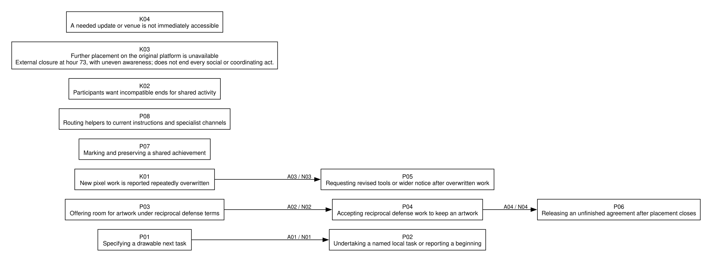

One community: PlaceNL
Follow one community from its public record and coding to its local model, its contribution to the population analysis, and its place in the final grouping.
1 The room
r/PlaceNL did not exist before the canvas opened. Its record starts at H27:40 with a post calling itself “the official coordination for placing pixels in Place”, and runs to the day after the freeze. In that time it published hourly plans, sent its planners to Discord, ran maintenance scripts, made pacts and broke them, handed orange ground back to rooms it had displaced, and fought with itself over a Yeti. It wrote in Dutch and English. Its neighbours in the Dutch area were r/thenetherlands, the standing national sub, and r/cirkeltrek, its circlejerk.

- 1 first post in the record, H27:40
- 2 border around Goodboye, H42:57
- 3 the new plan: fill the left with orange, H45:43
- 4 canal houses planned, H68:19
- 5 placing stops, H73
Placements per hour inside r/PlaceNL’s eight atlas polygons. The bars start before the room’s record: the Dutch area was built by many rooms, and r/PlaceNL only joined it on the second day. The figure counts what landed in the region, not what the room’s writers placed.
| Artwork in the atlas | Area, px | Placements | Its own | Placers |
|---|---|---|---|---|
| Entire Dutch Area | 33,760 | 448,803 | 15,618 | 80,781 |
| Dutch Anthem and Royalty | 9,377 | 82,812 | 70,156 | 16,810 |
| The Dutch Border | 602 | 12,777 | 12,583 | 4,186 |
| Dutch bicycles | 433 | 11,869 | 11,869 | 1,434 |
| Heineken bottle | 618 | 7,136 | 6,985 | 1,996 |
| Trap er niet in! | 330 | 3,718 | 3,612 | 1,580 |
| Dutch Heart | 91 | 1,230 | 1,230 | 565 |
| VOC logo | 72 | 1,072 | 1,072 | 683 |
“Its own”: placements in the smallest polygon that holds them. The Entire Dutch Area is an umbrella: 448,803 placements fall inside it, 15,618 of them its own. The atlas is an outcome, never evidence of what the room meant.
The Dutch area, replayed
Reproduced on 29 October 2026: 292 fifteen-minute cuts, ending at the freeze. Download the replay.
Opening and final frames


The eighteen Dutch-area artworks in 15-minute cuts from the opening to the freeze at H72:58, the Entire Dutch Area as its own row, the others packed in proportion (Layer B, NLD2/figures). The still is the freeze.
2 The coding and case account
The original coding contains 246 code applications on 228 distinct items, grouped into 21 themes. Read the account below or inspect the complete source-linked coding files.
All codes · All themes · Original case account · Original timeline · Saved outputs and checkpoint
The case lead (GPT-5.6 Sol, Layer A, 7 September 2026) read all 101 openings; a fixed gate then split the 701 items into two batches of whole threads for two fleet coders. The lead wrote this account after they coded them, before any population model existed. Quotes stay in the coder’s Dutch; the English in brackets is ours.
Chronology
The supplied record is silent from the canvas opening through H+27.67, and the pre-week brief contains no items, so this case cannot establish what the room was doing when r/place opened or how its coordination began. The first visible episode runs from 62uylj at d1 04-01 19:40 to 63297o at d2 04-02 21:07. It starts by declaring “DE OFFICIELE COORDINATIE VOOR PIXELS PLAATSEN IN PLACE” [THE OFFICIAL COORDINATION FOR PLACING PIXELS IN PLACE] (62uylj), publishes and repeatedly revises plans, and directs people to Discord because “Het plan veranderd ieder uur” [the plan changes every hour] (dfqn51t). The reply that the Reddit copy “is echt al 24 uur oud” [is really 24 hours old already] (dfqotc8) makes Discord's faster tempo explicit. By the episode's end, a moderator post tells people “Houd je aan het plan” [stick to the plan] (63297o), announces a maintenance script, and later adds an attack on the Void. This stretch is described from batch 01, whose coder read it.
From 632mbf at d2 04-02 22:08 to 635b21 at d2 04-03 07:32, expansion and restraint coexist. A call to make a Goodboye dog orange (632mbf) is refused because the clogs are “een prachtig compromis” [a fine compromise] (dfqszy6). Elsewhere people defend overnight, attack Singapore, fill territory left by the Void, and make a pact “om samen The Void te bestrijden” [to fight The Void together] (635b21). The moderator's edited plan also promises “gebied terug te geven aan groepen die we weg hebben geplaced” [to give territory back to groups we placed away] (635b21). These are contrasting practices in the same period, not evidence that the community collectively changed from conquest to restraint.
The next episode, from 635ujh at d2 04-03 10:13 to 636e4q at d2 04-03 12:18, combines allocating space with redesigning Dutch work. The diplomacy post says, “We will review all art and divide the area between those we've wronged in the past” (635ujh), while one participant insists that the room is “uitlenen (niet weggeven!)” [lend (not give away!)] (dfrl466). Applicants ask for bounded places; participants propose provincial flags, Delft-blue tiles, Buurman & Buurman, canal houses, and a windmill. The allocation therefore repairs some displacement while retaining a claim over the orange ground. At the episode's end, the flag redesign stalls around scripts: a commenter says they block creativity and go against “het principe van /r/place” [the principle of /r/place] (dfrqdvr).
Batch 02 opens 28 seconds after the preceding post, with 636e8e at d2 04-03 12:19, and runs through the last maintenance plan 637wte at d3 04-03 16:35. It begins inside, rather than after, the unresolved script conflict. The dominant episode is participants fighting among themselves over whether the Yeti should survive: one says “Yeti moet weg” [the Yeti has to go] and runs scripts against it (dfrnfmf), while another warns that removing a classic meme turns people against them (dfrnkaj). Others propose borders around nearby art, bargain with GreyBlob, and keep proposing national words and pictures, while defense scripts erase attempted houses—“De huisjes worden allemaal weggepoetst” [the little houses are all being wiped away] (dfrvgvk). The sequence supports continuing tension between maintenance, expansion, and preservation; it does not show that the earlier canal-house dispute caused the Yeti fight.
The closing episode runs from 6383f6 at d3 04-03 17:05 to 639qno at d3 04-03 21:27. The sticky appears 29.4 minutes after the last maintenance plan and says Reddit ended the experiment, then thanks participants “voor het coördineren en het groots maken van ons Neerlands trots” [for coordinating and making our Dutch pride great] (6383f6). Replies sing the Wilhelmus, praise colonization, argue over the Yeti and the point of Place, and archive the result as history, backgrounds, and timelapses. A moderator title then says, “Place is voorbij, maar we meemen gewoon door in de Cirkeltrek” [Place is over, but we simply carry on in the Cirkeltrek] and invites people to Discord (638j4l). The record closes with “You guys are real jerks” (639qno), but its deleted body leaves the grievance unknown. This final stretch is described from batch 02, whose coder read it.
Relations — what set off what
The stale Reddit plan explicitly prompts a move to Discord. “Het plan veranderd ieder uur, Join alstublieft de Discord” [the plan changes every hour, please join the Discord] (dfqn51t) receives, 37.6 minutes later, the answer that the poster already got the copy there and it was 24 hours old (dfqotc8). The later turn names the same plan and venue, so this is an answered correction rather than a relation inferred from adjacency.
The proposed Goodboye offensive—“Maak 'm oranje!” [make it orange!] (632mbf)—draws a refusal 5.1 minutes later because people had worked all day on cooperation and the clogs were a compromise (dfqszy6). The reply states its reason; this is a supported response, not merely a neighboring comment.
Across the slice boundary, the canal-house/script dispute in 636e4q is followed 28 seconds later by the Yeti thread 636e8e. Both concern scripts overriding desired artwork, but no passage says the first set off the second. It is an observed continuation of a problem, not a causal relation. [crosses 01|02]
Inside the Yeti thread, “Heb er scriptjes op zitten om hem weg te halen” [I have scripts on it to remove it] (dfrnfmf) draws, 3.6 minutes later, the answer that removing classic memes is diplomatically unwise (dfrnkaj). Later, a direct request for a template (dfrqj1o) receives “zo hoort de yeti er uit te zien” [this is how the yeti is supposed to look] after 2.4 minutes (dfrqmup); 1.2 minutes later the requester says, “Ik ga hem herstellen” [I am going to restore it] (dfrqoo5). Here the supplied template directly supports the announced restoration attempt. The later disappearance of the Yeti is an outcome in the sequence, but the record does not establish which actor or script caused it.
The GreyBlob exchange supports a conditional bargain and shows why it failed to finish. The offer permits a new blob only “IF you'll maintain the area orange and defend it” (dfrvghl). Forty-one minutes later a GreyBlob participant accepts—“we will help defend you guys as long as the greyblob can live” (dfrxjjm)—and 16.6 minutes later the proposer promises to contact moderators (dfrycae). After another 3.88 hours, the participant says the bargain is moot because “r/place has ended now” (dfsacgn). The participant explicitly attributes non-completion to the platform ending; the corpus does not show a moderator decision inside Discord.
The last maintenance plan 637wte precedes the closing sticky 6383f6 by 29.4 minutes. The closing post attributes the end to Reddit, not to that plan, so the relation supported here is sequence: a still-active plan was overtaken by platform closure.
The rest of the account: posts against comments, counter-reading, saturation, selection, other communities named, absence
Posts against comments
[Batch 01] Posts present a governable project: the current-plan post says following the plan produces “een zo goed mogelijk resultaat” [the best possible result] (63297o), and the diplomacy post promises to divide space among groups previously wronged (635ujh). Comments expose the limits of that claim: the room is lending rather than giving away space (dfrl466), proposals are ignored, and organized Discord participants distinguish themselves from other Dutch placers. The posts promise a plan and allocation; the comment layer shows conditional ownership and incomplete command.
[Batch 01] Posts introduce scripts as maintenance and implementation tools. Comments say scripts block Czech cooperation and new Dutch art; the clearest complaint asks who will turn off defense because “De huisjes worden allemaal weggepoetst” [the little houses are all being wiped away] (dfrvgvk). This is a practical contradiction, not proof that every script failed: the edited plan also says one bug “is inmiddels hersteld” [has since been fixed] (63297o).
[Batch 02] The Yeti post calls for preservation, while a comment says “Yeti moet weg” [the Yeti has to go] and reports scripts removing it (dfrnfmf). The later closing exchange sharpens the difference: one participant says friends used “10+ accs” to destroy the Yeti (dfs1iso), while another asks why because “De meesten wilde die behouden” [most people wanted to keep it] (dfsbol7). These are conflicting positions and reported actions, not evidence that the community first agreed and then changed its mind.
[Batch 02] Celebratory posts describe unprecedented coordination, Dutch pride, and successful colonization. The comment layer contains a direct dispute over the event's purpose: one person complains that Discord repaired small projects instead of taking them (dfs0lu0), and the reply says it was not Civilization but a “teken samen iets leuks” [draw something nice together] activity (dfs1ao1). Territorial pride is prominent in posts; this argument over conquest versus shared drawing is visible in comments.
Counter-reading
My one-sentence reading is: PlaceNL made expansion and national artwork partly governable through changing plans, Discord, scripts, borders, and deals, but its public exchanges repeatedly show incomplete control and conflict over what should survive before participants closed by celebrating and preserving the result.
A plausible competing account is that this coordination was broadly effective and the visible disputes were marginal exceptions. If my reading were wrong, the corpus should contain people saying that scripts and current plans worked reliably, that participants followed instructions, and that bargains or protected artwork held without recurring interference.
The strongest contrary item is the edited current-plan post 63297o: it says a script error “is inmiddels hersteld.” [has since been fixed] This establishes a concrete repair and prevents a blanket claim that scripts or coordination simply failed. The counter-search also returned dfrfv7q, where a moderator says another fault “Wordt aan gewerkt,” [being worked on] dfqdb8w, which directs people to Discord for the latest plans and agreements, dfqzj9p, which describes script-assisted overnight defense, and 635b21, which states the Void pact and return plan. I read each returned item. A corpus-wide regex search for sentences in which “iedereen” [everyone] or “allemaal” [all] is followed by following, listening, keeping to, or working with the plan returned no items; that null is limited to those Dutch terms and cannot establish universal noncompliance, especially in a partial record with missing bodies and off-platform talk.
I added the late code “saying the script error has now been fixed” to the existing script theme. The contrary evidence changes the account from coordination as ineffective to coordination as achieving local repairs, defense, and public bargains. The central qualification survives: later passages still show an absent script manager (637wte), erased houses (dfrvgvk), and incompatible Yeti actions (dfrnfmf, dfsbol7).
Saturation
Later-slice practice was partly repetition and partly genuinely new closing work. The first codes for publishing and updating the current plan, moving live coordination into Discord, deciding what the next pixels should do, designing Dutch words, pictures, and borders, holding and finishing what is already there, expanding, attacking, and claiming orange ground, making borders, pacts, and deals with neighbors, sparing and rebuilding nearby artwork, assigning orange space to displaced groups, making, fixing, and arguing over scripts, admitting that plans do not control every Dutch placer, celebrating and retelling Dutch conquest, and crossposting advice for people talking about flags all occur first in batch 01. Batch 02 repeats and extends each of those except moving live coordination into Discord; Discord still appears in later script and continuation practices, but no batch-02 code was added to that earlier theme. The first codes for fighting among ourselves over whether the Yeti stays, thanking one another and singing the event closed, turning the finished work into history and keepsakes, arguing whether Place meant conquest or drawing together, carrying pixel play and the community on elsewhere, finding out too late that Place had ended, joking back at a summoned bot, and calling the Dutch group real jerks occur in batch 02. The new batch-02 practices cluster around the last conflict and the ending rather than opening a different organizing system.
The Reddit record is strong enough to support a full verdict: all 101 threads were disposed and coded, with no event-touching opening classified out of scope. It is not a whole account of coordination. Discord held fast-changing plans, script targets, moderator contact, singing, and continuation, but only invitations and reports return here. Deleted and removed bodies interrupt proposals and the final accusation, and linked images, repositories, and canvases were not fetched. Branch B also means no single reader held the raw week and there is no agreement measure; the account joins two independently read slices, so cross-boundary continuity is weaker than within-slice exchange evidence.
Selection
The case lead read the empty pre-week brief and all 101 openings before the fixed gate. The gate selected branch B on 701 in-window items against a threshold of 500, producing batch 01 (442 items) and batch 02 (259 items), each made of whole threads in corpus order. Fleet coders retained all 101 threads because each touched r/place conduct or its immediate aftermath; none was excluded. A title naming the canvas was therefore never paired with an out-of-scope disposition. The case lead did not read raw threads while the fleet ran. After consolidation and theming, the counter-reading used find and read item; the late code came from 63297o, a thread the fleet coder had read in full.
Other communities named
Goodboye is both negotiated with and targeted by a rejected offensive. r/rmtk requests a ceasefire; Czech and Swedish neighbors are thanked as friends at the close. Puerto Rico, the Dominican flag, Indonesia, LANBox, the Yeti, SS13, the Creeper, and GreyBlob appear in arguments about attacking, bordering, preserving, rebuilding, or exchanging defense. The allocation thread receives claims for r/ftlgame, r/mindcrack, r/menonkazoo, r/formula1, r/dominican, r/farmcarrots/r/fartcarpets, and r/albania. These are PlaceNL's and applicants' statements inside this venue, not reconstructions of the other communities' conduct.
Discord is the main place to which live planning visibly moves: Reddit receives current plans, role and script instructions, requests for moderator contact, complaints, and memories, while the underlying discussion remains unseen. Strawpoll carries a Greece choice; GitHub and image hosts carry tools, targets, templates, and archived results; r/place and r/cirkeltrek are used to circulate designs and the history rap. After closure, a moderator title points through Cirkeltrek to Discord, while one reply points to pxls.space; the latter shows another canvas was available, not that PlaceNL as a group moved there.
Absence
The empty pre-week archive supplies no ordinary-week baseline and cannot show that the community had no earlier life. The first corpus opening is already 27.67 hours after the canvas began, so the origin of “official” coordination is absent. Removed and deleted bodies leave some proposals, warnings, and the closing “real jerks” accusation without grounds; surviving titles and replies establish only the acts they contain, and no missing text was reconstructed. Image-only and link-only posts show what participants called or proposed, not what the targets displayed. Discord is conduct as a chosen venue, but its unseen deliberation limits claims about how plans, permissions, and bargains were decided.
The coder’s timeline
timeline — r/PlaceNL
Facts only: stickies, moderator posts, edits, with times and item ids. One line each, in time order. Started by the case lead from the brief; extended by each coder.
seeded by the harness from the record's metadata (sticky and moderator marks are as of retrieval)
- H+52.86 04-02 20:51 [moderator] post by o6JAXyA+amD1wqAPNYy7128N5Yc=: Hier vind je de Discord server! Voel je vrij en werk met ons mee! (6325vj)
- H+53.12 04-02 21:07 [moderator] post by o6JAXyA+amD1wqAPNYy7128N5Yc=: Het Huidige Plan (wordt regelmatig geüpdatetetet) (63297o)
- H+62.82 04-03 06:49 [moderator] post by c3WGy2DjWkp16U9X6WHVr9BCXZI=: [BREKEND] Het huidige plan: uitbreiden. (6355gu)
- H+63.54 04-03 07:32 [moderator] post by o6JAXyA+amD1wqAPNYy7128N5Yc=: HET ALLERNIEUWSTE PLAN: The Void terugwerken! (635b21)
- H+73.09 04-03 17:05 [sticky@retrieval] post by NfAarM/8NlE8LloF316+y3OBmU8=: [EINDE /R/PLACE] Dank u allen! (6383f6)
- H+74.13 04-03 18:07 [moderator] post by [deleted]: Place is voorbij, maar we meemen gewoon door in de Cirkeltrek, klik hier om naar de Discord te gaan. (638j4l)
added by fleet coder batch 01
- d2 04-02 20:56 [moderator, sticky, edited] o6JAXyA+amD1wqAPNYy7128N5Yc= routes roles, plans, suggestions, and script development to named Discord channels. (dfqpfc5)
- d2 04-02 21:07 [moderator, edited] o6JAXyA+amD1wqAPNYy7128N5Yc='s current-plan post includes a script announcement and a later instruction to attack the Void. (63297o)
- d2 04-03 06:49 [moderator, edited] c3WGy2DjWkp16U9X6WHVr9BCXZI='s plan visibly retains struck-through Puerto Rico and Florida-line instructions before redirecting expansion into the Void. (6355gu)
- d2 04-03 07:32 [moderator, edited] o6JAXyA+amD1wqAPNYy7128N5Yc='s Void plan includes returning orange-filled area to groups that had been displaced. (635b21)
- d2 04-03 12:18 [edited] o6JAXyA+amD1wqAPNYy7128N5Yc='s flag-update post says a prepared script update awaits the absent permission-holder. (636e4q)
added by fleet coder batch 02
- d2 04-03 13:45 [edited] oZWJXimnHjlWRw2+Qft/HljJ94M= adds “luctor et emergo” and a Zeeland flag as an alternative pennant proposal. (636ukq)
- d2 04-03 14:21 [edited] 5Uh2jhzuqA/KXX63UhivC9020lU= publishes an English PlaceNL history rap. (6372dy)
- d2 04-03 14:46 [edited] AvSRAoHX5URY56Ba8s7tRTv5v5E= adds successive alternatives to a proposed new border. (dfrsrlo)
- d2 04-03 15:32 [edited, body removed] WWAQidRYqodQeeNfORmsbo1LfKg='s surviving title polls support for allowing r/GreyBlob into the Dutch area. (637idk)
- d3 04-03 16:35 [edited] o6JAXyA+amD1wqAPNYy7128N5Yc= issues a maintenance and Buurman & Buurman upgrade plan, says the script manager remains absent, and welcomes the Gnome under CheeseCat. (637wte)
- d3 04-03 16:44 [edited] yx8t/ud4QJaOR/GJq1RSf8T7hcU= asks for help with an image-linked project under Nyan Cat, then adds “Welp.” (dfryo2f)
- d3 04-03 17:05 [sticky at retrieval] NfAarM/8NlE8LloF316+y3OBmU8= announces that r/place has ended and thanks participants for coordinating. (6383f6)
- d3 04-03 17:09 [edited] CsgXbG5LEhn5F7axJ5J5APRC0xE= congratulates participants on a “geslaagde kolonisatie.” (dfrzwwc)
- d3 04-03 18:07 [moderator, body deleted] A surviving post title directs people onward through Cirkeltrek to Discord. (638j4l)
3 The local model: R6
After coding, the original case lead developed a standalone explanation of PlaceNL. This is a separate continuation from the coding close. The aggregator did not build its population model from this R6 model.
The local model explains how participants made work possible without showing control over all Dutch placers. It distinguishes practical direction from claims on shared action. A request can gain a helper, a neighbour can accept reciprocal terms, and obstructed work can prompt requests to change the means. These are bounded accounts of local responses, not measured effects.

Local labels such as P02 belong to this model. The population model reuses labels for different units.
Read the complete local model
A model of local uptake without complete control
Target length: under 900 words of account, followed by the checkable apparatus.
Claim and sequence
PlaceNL participants made local action possible by specifying work, answering requests and exchanging commitments. The public record does not establish one goal accepted by every Dutch placer or one center able to make them comply. Instructions already exist when the record starts. Their origin and the formation of the group are left-censored. The model therefore begins with available directions, not a story in which a scattered readership necessarily became one organization.
A task can gain a responsive helper. The proposed PlaceNL inscription
receives assent and a report of a beginning (P01,
P02, A01, E-10).
We hebben een beginnetje.
c0191, AvSRAoHX5URY56Ba8s7tRTv5v5E=, item
dfrwq84, thread 637i4l, hour
72.07777777777778, offsets 0:52, cite 3622.
The newcomer's own reason was to make instructions easier to find
(c0189); no later recruit is observed using the lettering.
In the Yeti episode, supplied template help likewise receives an
undertaking (c0134, c0135), but the same
restorer then reports defeat (c0136). Local uptake is
distinct from lasting completion. The opposed removal and preservation
commitments (K02) are explicit. A claimed removal script is
not independent proof that it caused the timed disappearance.
Neighbor claims can become reciprocal commitments (P03,
P04, A02). Grey Blob space is offered for
upkeep and defense; the applicant promises defense as long as the
artwork can live. Puerto Rican willingness after a similar offer
provides a separate tentative instance. An application, acceptance or
diplomatic assurance is not proof of reconstruction. Hosts retain their
territorial claim, and willingness among organized users does not cover
every placer.
The organized people in our are willing to let you stay but there are many dutch /r/place users that aren't in our discord
c0097, BaTI0SSzfRbeywIZrzTmzoLyb3o=, item
dfrofwc, thread 6368zq, hour
69.14527777777778, offsets 44:166, cite 3648.
Practical obstacles can reopen the means of work rather than its
desired object (K01, P05, A03).
The house builder reports repeated repair of the flag over the new
pixels; retry, a request to disable the defense script and wider
publicity follow. These are efforts to change the conditions of
execution, not evidence that the script was changed successfully. An
absent updater (K04) is explicitly reported. In the Czech
character episode a reported manager instead attributes erasure to
independent placers. A script-only explanation cannot absorb that
contrary diagnosis as settled fact.
Closure prevents original-platform placement (K03) but
not every current act. The accepted Grey Blob bargain is followed by a
contact promise, then an explicit release after Place ends
(P06, A04). The coded final span preserves
lament; the cancellation and its reason are in the full item read at
3549. This supports the sequence and the participant's explanation, not
a causal claim that slow venue access cost the drawing its chance. Other
post-close acts include an access question, an impossible expansion
proposal and invitations elsewhere with uptake unknown.
Participants mark achievement through thanks, song and preserved
accounts (P07).
Dank u allen hartelijk voor het coördineren en het groots maken van ons Neerlands trots.
c0203, NfAarM/8NlE8LloF316+y3OBmU8=, item
6383f6, thread 6383f6, hour 73.0886111111111,
offsets 170:258, cite 3629.
Pride coexists with opposed accounts of conquest and drawing
together. A result image is offered (c0209), but it has not
been inspected. The coded report of a kept result cannot tell which
arrangement kept particular work alive. Temporary LANBox rescue in
uncoded full-thread context is the strongest challenge to an account
centered only on ineffective direction: item dfrrku2, hour
70.37555555555555, says it looks saved for now; item
dfrrmvl, hour 70.39611111111111, agrees. A later appeal in
item dfrvia1, hour 71.68472222222222, reports decline (read
3523, thread 6368zq). These are context reports, not new
code quotations or verified survival.
What this model does and does not explain
The best supporting contrast is ordinary label uptake against Yeti aid with opposed ends and reported defeat. The threatening evidence is successful local repair and temporary rescue. The separating condition is not nationality or presence of a script: a helper's undertaking, practical ability to revise means and compatible intended outcome are distinct. The text does not establish a sufficient combination that guarantees completion. Effective coordination with exceptional disputes remains a live rival for the unseen activity; public disputes do not measure its frequency.
The model relates presences and dated acts, not amounts. No coder-stated covariation warrants arrows between degrees. It claims no origin mechanism, universal response, success rate, or comparative survival advantage. It is a post-critic candidate, not a closed R4 result.
ungrounded relationships
A05, routing to current instructions leading to task
uptake, is theorised only and is excluded from the grounded model.
Discord directions are observed but linked entry and execution are not.
Venue centrality cannot supply the missing instance. This is the
relation I most expected but could not ground. Shared identity causing
compliance, script access guaranteeing preservation, and pride producing
new work also remain ungrounded conjectures, not additional numbered
arrows.
Without the theorised relation the retained adjacency is
P01 to P02 (A01),
P03 to P04 (A02),
K01 to P05 (A03), and
P04 to P06 (A04, under
K03). With theorised relations displayed separately, add
only P08 to P02 (A05, not in the
model). Unconnected conditions and achievement work remain visible; no
edge is invented merely to connect the display.
looked-for-and-not-found
The pass read the complete closed coded record and every predeclared episode's whole constituent threads. These reads did not ground a dated complete restoration cycle, confirmed group migration to Discord or pxls.space, a single accepted group purpose, an observed moderator decision in the Grey Blob bargain, or a causal identification of the Yeti eraser. These are weak scoped absences in a partial public archive. They cannot rule out hidden work, a completed task whose result went unreported, or a decision made elsewhere. A retrospective removal claim and competing script diagnoses were found; neither resolves the earlier timed causal question. No search hit count substitutes for reading.
Dynamics and limits
The model has no grounded closed loop; loops.jsonl is empty. Repeated calls to restore the same object show renewed desire, not all dated steps of a return cycle. The original canvas's placement closure is irreversible in this window, but obligations can be released after it and new invitations remain possible. The model breaks where it is asked to infer compliance from a direction, infer completion from an undertaking, or infer agreed ends from common symbols. These are substantive evidentiary limits, not a claim that the sample's topic or size causes failure.
The three strongest retained relations are A01,
A02 and A03, each fair rather than strong. A
coder-selectivity explanation is plausible: coding may privilege
explicit responses and complaint threads. For A01, original
request, assent and reported start preserve a concrete link, while the
live Goodboye refusal is a counterexample and the post-close proposal
lies outside the availability bound. For A02, both parties
state reciprocal terms; the allocation thread's unanswered or rerouted
requests prevent upgrading this to a success rate. For A03,
the house report and explicit corrective request identify the practical
problem without resolving its cause; the Czech contrary diagnosis and
the Yeti restorer's defeat preserve alternative responses. No relation
beats a numerical base-rate test because no such test or quantitative
claim was made. Concrete connections, not co-occurrence counts, carry
the local orders.
Dimension projection
The following mass registers are derived from the typed endpoints, with each retained arrow counted once by ID, not weighted by code volume or interpreted as prevalence. External in-mass and out-mass omit internal arrows. No coder theme is multiply placed, so the with-doubles and without-doubles registers are identical.
For D01, external in-mass [], external out-mass [],
internal mass [A01, A03]. For
D02, external in-mass [], external out-mass [], internal
mass [A02, A04]. The separate theorised
overlay adds A05 only to D01's internal
register. There is no dimension-to-dimension edge or cross-dimensional
direction to interpret as drift. Under the card's graph convention each
dimension has neither external input nor external output, so both a
condition and residue warning apply; this graph property does not
establish that either dimension caused an outcome. The local mechanisms
do not abstract into one dimension-level effect. Report their internal
mass, not an unsupported aggregate arrow. P07 and
K03 remain dimensionless with their source tiers; closure
bounds A04 without being manufactured into a causal
edge.
Structure and unused material
The unchanged R3 partition supplies six provisional coined higher
themes. Directional reach gathers plan maintenance, venue directions and
wider circulation. Pixel work selection holds concrete alternatives for
using effort. Negotiated coexistence holds conditional or restrained
relations with another claimant. Limits of practical direction retains
practical repair, access and uncontrolled placers. Contested collective
purpose preserves opposed ends. Shared achievement claims holds
valuation and remembrance and stays dimensionless. D01
distinguishes reach, specified work and practical means;
D02 distinguishes neighbor claims and incompatible ends.
The first question cannot settle the second. The least certain bundle
remains T4-004, where technical access and wider control
limits must not become one verified failure cause.
The all-purpose coordination partition is rejected because it erases those distinctions. A script-only theme loses independent placers; combining neighbor bargains with internal purpose conflict mistakes accommodation for agreement. No coder conflict inventory or cross-room onset contrast is available. Membership and declarations are unchanged; only model-use and pass metadata are updated with histories.
The model does not use the contextual coder themes carrying pixel
play elsewhere (t18), joking at a bot (t20) or
calling the group real jerks without surviving grounds
(t21) as typed processes. Their distinct observations
remain in the source; t18 is story residue, not migration.
Late discovery (t19) supplies the closure condition, not a
new higher theme. Other placed coder themes remain available through the
higher themes; these are functional exemplars, not a claim that every
code runs a retained arrow. No third-order tier exists in this room.
Assignment coverage and unpicked code mass remain in structure.md; no
new prevalence inference is drawn from them.
Typed elements
Each row names its range, source tier and evidence. These JSON lines reproduce the source model/elements.jsonl; process and condition are the only kinds currently needed. A formal command role or a redundant summary claim was rejected because it would add neither an evidenced position nor an explanatory distinction. The absent updater remains an access condition, not an invented appointed role.
{"id":"P01","kind":"process","statement":"Specifying a drawable next task","tier":"T4-002","dimension":"D01","evidence":{"findings":[],"codes":["c0105","c0189"]},"range":"A proposed object and its ordinary local response, not every choice, order or completed mark.","since":"R4-pass-1","status":"standing"}
{"id":"P02","kind":"process","statement":"Undertaking a named local task or reporting a beginning","tier":"FP-01","dimension":"D01","evidence":{"findings":[],"codes":["c0014","c0135","c0191"]},"range":"Acknowledged work or reported start; no inference of durable completion.","since":"R4-pass-1","status":"standing"}
{"id":"P03","kind":"process","statement":"Offering room for artwork under reciprocal defense terms","tier":"T4-003","dimension":"D02","evidence":{"findings":[],"codes":["c0059","c0193"]},"range":"Explicit conditional neighbor offers, not every restraint appeal.","since":"R4-pass-1","status":"standing"}
{"id":"P04","kind":"process","statement":"Accepting reciprocal defense work to keep an artwork","tier":"T4-003","dimension":"D02","evidence":{"findings":[],"codes":["c0060","c0194"]},"range":"Tentative willingness or explicit reciprocal promise, not completed performance.","since":"R4-pass-1","status":"standing"}
{"id":"P05","kind":"process","statement":"Requesting revised tools or wider notice after overwritten work","tier":"T4-004","dimension":"D01","evidence":{"findings":[],"codes":["c0161","c0162","c0163"]},"range":"Correction and publicity requests grounded in participants' reports, without certifying their diagnosis.","since":"R4-pass-1","status":"standing"}
{"id":"P06","kind":"process","statement":"Releasing an unfinished agreement after placement closes","tier":"t09","dimension":"D02","evidence":{"findings":[],"codes":["c0196"]},"range":"Explicit release in the read full Grey Blob turn; coded quote alone preserves lament.","since":"R4-pass-1","status":"standing"}
{"id":"P07","kind":"process","statement":"Marking and preserving a shared achievement","tier":"T4-006","dimension":null,"evidence":{"findings":[],"codes":["c0203","c0209"]},"range":"Thanks, song and preserved accounts, not verified artwork survival or goal unanimity.","since":"R4-pass-1","status":"standing"}
{"id":"P08","kind":"process","statement":"Routing helpers to current instructions and specialist channels","tier":"T4-001","dimension":"D01","evidence":{"findings":[],"codes":["c0004"]},"range":"Directions to coordination; observed entry or use is not required or inferred.","since":"R4-pass-1","status":"standing"}
{"id":"K01","kind":"condition","statement":"New pixel work is reported repeatedly overwritten","tier":"T4-004","dimension":"D01","evidence":{"findings":[],"codes":["c0160","c0162"]},"range":"A reported practical obstacle, not a settled identity of erasers.","since":"R4-pass-1","status":"standing"}
{"id":"K02","kind":"condition","statement":"Participants want incompatible ends for shared activity","tier":"T4-005","dimension":"D02","evidence":{"findings":[],"codes":["c0125","c0135","c0210","c0211"]},"range":"Explicit or enacted opposed desired outcomes, not a collective reversal or all-purpose disagreement.","since":"R4-pass-1","status":"standing"}
{"id":"K03","kind":"condition","statement":"Further placement on the original platform is unavailable","tier":"t19","dimension":null,"evidence":{"findings":[],"codes":["c0201","c0226"]},"range":"External closure at hour 73, with uneven awareness; does not end every social or coordinating act.","since":"R4-pass-1","status":"standing"}
{"id":"K04","kind":"condition","statement":"A needed update or venue is not immediately accessible","tier":"T4-004","dimension":"D01","evidence":{"findings":[],"codes":["c0106","c0182"]},"range":"Absent updater, practical venue constraint or principled objection; these grounds remain distinct.","since":"R4-pass-1","status":"standing"}Typed relations and sampling
The rows below reproduce model/arrows.jsonl. All retained instances
rest on verbatim bottom-tier quotations with dated source items, not
computed time intervals; no interval measurement is claimed. Every
sampled episode was chosen outside the original support episode before
setting strength. The failure observations were recorded in note 3183
before tests; note 3665 records resulting scope decisions. No strong
arrow is claimed, so the strong-arrow live/aftermath test has no
eligible object. A04 explicitly crosses the deadline; the
other retained instances are live. Similarity of later requests cannot
supply a complete loop.
{"id":"A01","from":"P01","to":"P02","kind":"order","grounding":"codes-read","grounding_note":"Dated coded passages and whole linked threads, not adjacency or shared words alone. A contrary response or unshown outcome limits the relation to its stated local scope.","units":[{"unit":"episode","id":"E-10"}],"support":[{"code":"c0189","quote":"ik zou graag /r/PlaceNL in onze nederlandse vlag willen zien net zoals dat /r/cirkeltrek erin staat. zo kunnen nieuwelingen makkelijker en sneller vinden wat ze wel en niet moeten proberen over te nemen."},{"code":"c0191","quote":"We hebben [een beginnetje](http://puu.sh/v80Ma.png)."}],"support_transition":[],"mechanism":"A concrete proposed mark gives a responsive helper a shared object to take up; the observed sequence ends at reported beginning, not completion.","mechanism_fails_if":"The named task is refused, is not followed by any undertaking, or the supposed undertaking concerns another object.","sampled_against":[{"unit":"episode","id":"E-02","why_chosen":"Specified border and later specified attack offer both uptake and a refusal outside label support.","found":"fails"},{"unit":"episode","id":"E-05","why_chosen":"Template supplied inside an opposed-purpose dispute could fail to elicit help.","found":"holds"},{"unit":"episode","id":"E-09","why_chosen":"Available technical direction could receive no installation or uptake.","found":"not testable"},{"unit":"episode","id":"E-14","why_chosen":"Concrete late task tests whether specification alone suffices.","found":"not testable"}],"mechanism_failure_present":true,"negative_check":"counterexample","base_rate_beaten":null,"strength":"fair","bound":"Local order in responsive task exchanges, with placement available; neither all concrete proposals nor every willing helper produces action or a finished result.","in_model":true,"gloss":"A concrete proposed mark gives a responsive helper a shared object to take up; the observed sequence ends at reported beginning, not completion.","since":"R4-pass-1","status":"bounded","counterexample_response":{"evidence":["c0042","c0043"],"alternatives":"Treat every direction as command; or omit successful uptake because it is not completion. Both erase observed responses.","decision":"Retain the shown local order and the live Goodboye refusal as a genuine alternative. The late proposal c0226 is outside available-placement scope, not an observed failure of this mechanism. No general effect size or guarantee is retained."}}
{"id":"A02","from":"P03","to":"P04","kind":"order","grounding":"codes-read","grounding_note":"Dated coded passages and whole linked threads, not adjacency or shared words alone. A contrary response or unshown outcome limits the relation to its stated local scope.","units":[{"unit":"episode","id":"E-08"}],"support":[{"code":"c0193","quote":"You may build a new Gray Blob in the orange area, IF you'll maintain the area orange and defend it."},{"code":"c0194","quote":"Please, we will help defend you guys as long as the greyblob can live."}],"support_transition":[],"mechanism":"Conditional room-for-defense terms give another claimant an exchange it can accept; the Grey Blob reply explicitly takes on defense in return for survival.","mechanism_fails_if":"The reply refuses the terms, accepts a different offer or omits the promised reciprocal work.","sampled_against":[{"unit":"episode","id":"E-03","why_chosen":"Earlier Puerto Rican rebuild offer and tentative willingness test reciprocal acceptance beyond Grey Blob.","found":"holds"},{"unit":"episode","id":"E-06","why_chosen":"An accommodation request tests whether coexistence always entails defense exchange.","found":"not testable"}],"mechanism_failure_present":false,"negative_check":"tested-absent","base_rate_beaten":null,"strength":"fair","bound":"Explicit reciprocal offer followed by conditional or tentative acceptance; no claim about all applications or actual performance.","in_model":true,"gloss":"Conditional room-for-defense terms give another claimant an exchange it can accept; the Grey Blob reply explicitly takes on defense in return for survival.","since":"R4-pass-1","status":"bounded"}
{"id":"A03","from":"K01","to":"P05","kind":"transition","grounding":"codes-read","grounding_note":"Dated coded passages and whole linked threads, not adjacency or shared words alone. A contrary response or unshown outcome limits the relation to its stated local scope.","units":[{"unit":"episode","id":"E-07"}],"support":[{"code":"c0160","quote":"Ik probeer al huisjes te bouwen maar de vlag wordt steeds gerepareerd."},{"code":"c0161","quote":"Probeer het nog eens, heb nu wat pixels kunnen zetten."},{"code":"c0162","quote":"Wie o wie zet het verdedigingsscript uit? De huisjes worden allemaal weggepoetst."},{"code":"c0163","quote":"Geen slecht idee dit soort dingen op zowal r/place en r/cirkeltrek te posten dan zien meer mensen het."}],"support_transition":[],"mechanism":"Reported overwriting makes the means of placing the new design a subject for retry, script-change requests and wider notice, rather than merely restating the design.","mechanism_fails_if":"Overwriting is reported but receives only abandonment or unrelated discussion, with no attempt to change means or reach.","sampled_against":[{"unit":"episode","id":"E-04","why_chosen":"A separate artwork's resistance could lead to correction or expose a mistaken cause.","found":"holds"},{"unit":"episode","id":"E-05","why_chosen":"The restorer's reported disappearance could lead to revision or simply defeat.","found":"fails"}],"mechanism_failure_present":true,"negative_check":"counterexample","base_rate_beaten":null,"strength":"fair","bound":"One observed corrective response to reported obstruction, not a universal response; script attribution remains participants' diagnosis and can be disputed.","in_model":true,"gloss":"Reported overwriting makes the means of placing the new design a subject for retry, script-change requests and wider notice, rather than merely restating the design.","since":"R4-pass-1","status":"bounded","counterexample_response":{"evidence":["c0067","c0136"],"read_receipts":[3406,3496],"alternatives":"Technical lock-in alone versus independent placers versus opposed ends. Czech manager's contrary diagnosis remains unresolved; Yeti restorer's defeat is not successful repair.","decision":"Keep the house correction-request transition; do not infer universal renewal, settled erasure cause or successful remedy."}}
{"id":"A04","from":"P04","to":"P06","kind":"order","grounding":"codes-read","grounding_note":"Acceptance and contact promise precede the full final turn in read 3549. The coded c0196 quote preserves lament only; the explicit cancellation and closure reason are in that served full item, not an expanded cite.","units":[{"unit":"episode","id":"E-08"}],"support":[{"code":"c0194","quote":"Please, we will help defend you guys as long as the greyblob can live."},{"code":"c0195","quote":"Thanks for your reply, I'll contact our mods about it!"},{"code":"c0196","quote":"looks like the GreyBlob will just be forgotten like tears in the rain"}],"support_transition":[],"mechanism":"A previously accepted but unfinished bargain is later released by its applicant once placement is unavailable; the whole last turn attributes cancellation to closure.","mechanism_fails_if":"The undertaking was already completed, the release concerns another task, or cancellation precedes acceptance.","sampled_against":[{"unit":"episode","id":"E-07","why_chosen":"Another unfinished project crosses closure and might show the same explicit release.","found":"not testable"},{"unit":"episode","id":"E-14","why_chosen":"A post-close proposal tests whether every late task has a prior accepted commitment.","found":"not testable"},{"unit":"episode","id":"E-12","why_chosen":"Continuation elsewhere tests whether closure ends all current activity.","found":"not testable"}],"mechanism_failure_present":"not-addressed","negative_check":"not-addressed","base_rate_beaten":null,"strength":"thin","bound":"Explicit release of this original-platform bargain under K03; not a universal ending to organizing, and not proof venue delay caused noncompletion.","in_model":true,"gloss":"A previously accepted but unfinished bargain is later released by its applicant once placement is unavailable; the whole last turn attributes cancellation to closure.","since":"R4-pass-1","status":"bounded","counterexample_response":{"evidence":["c0231","c0244"],"alternatives":"Universal organizing death at hour 73 versus original-placement unavailability with later social and coordinating acts.","decision":"The invitations challenge universal cessation, not the retained accepted-bargain-to-release mechanism. They lack a previously accepted original-platform bargain and are outside scope. External mechanism failure remains untested; keep this local sequence thin."}}
{"id":"A05","from":"P08","to":"P02","kind":"transition","grounding":"reading-alone","grounding_note":"Tempting theoretical direction-to-uptake claim; no linked entry-and-execution instance in the closed evidence.","units":[],"support":[],"support_transition":[],"mechanism":"Routing people to the live venue makes them undertake the current task.","mechanism_fails_if":"Directions receive no demonstrated entry or action, or entry precedes the pointer.","sampled_against":[{"unit":"episode","id":"E-09","why_chosen":"Script destination is offered but followed by access objection.","found":"not testable"},{"unit":"episode","id":"E-08","why_chosen":"Venue access is constrained and a public workaround is offered.","found":"not testable"}],"mechanism_failure_present":"not-addressed","negative_check":"not-addressed","base_rate_beaten":null,"strength":"thin","bound":"Theorised only. Missing Discord activity prevents testing migration or its consequences.","in_model":false,"gloss":"Routing people to the live venue makes them undertake the current task.","since":"R4-pass-1","status":"candidate"}Pass and story status
Pass 2 corrects the accepted critic's scope classifications and
narrates LANBox's temporary rescue followed by decline. Its register
retains allocation-process residue (E-03) and continuation
invitations without a modeled direction-to-uptake sequence
(E-12, E-13). These are boundaries of the
present explanation, not failed attempts to organize. No scope was
expanded to absorb them. The within-case episodes E-10,
E-05 and E-08 can each be narrated without a
shared goal or completion assumption. No story sentence has been
silently changed to erase a failed test. The critic has run once; every
item has a recorded answer. Further passes must test these specific
boundaries rather than erase their residue. The original candidate
remains retained.
Accepted critic corrections
The continuation invitation in E-12 does not show a
previously accepted original-platform bargain. It is not testable for
A04; no outside mechanism failure has been tested. The late
proposal in E-14, item 6387h7 at hour
73.34027777777777, is outside A01's already stated
available-placement scope. The live refusal in item
dfqszy6, thread 632mbf, remains a genuine
counterexample. These corrections alter sampling classifications, not
the retained sequences or their scope. The original pass and critic
packet remain retained.
The inherited single-passage description of t13 is
inconsistent with its distinct c0053 and c0163
passages. My structure projection now explains that inconsistency
without altering the immutable coded theme.
Read the local account
Organizing without a single command chain
PlaceNL's public text shows people making local work possible without
demonstrating control over all Dutch placers. The account runs from
Practical direction (D01)—reachable instructions, concrete
jobs and usable means—to Claims on shared action
(D02)—neighbor obligations and disputed ends. These are
analytic dimensions, not two stages or a causal arrow between
dimensions. Shared achievement claims (T4-006) remain
outside both: valuing an event is not automatically directing it.
Organizing is already underway at first observation; its origin and the
formation of an agreed group goal are not observed.
Directional reach (T4-001, P08) concerns
freshness and access, not centralized command:
Het plan veranderd ieder uur, Join alstublieft de Discord.
PlaceNL, QiKEY4UmYWfAl9I6Z14lhH5baY0=, hour 52.06194444444444,
c0004, item dfqn51t, thread
62uyvm, offsets 0:58 (cite 7612).
A concrete job can then become a named undertaking (P01,
P02), but that “then” is not demonstrated for the venue
pointer. A05, the tempting pointer-to-uptake connection,
remains ungrounded and outside the model. Pixel work selection
(T4-002) instead identifies the object someone can take up:
houses, words, maintenance or attack. These alternatives do not imply
goal consensus.
The ordinary inscription exchange, E-10, grounds
N01/A01. A proposal explicitly requests
/r/PlaceNL lettering to help newcomers find directions
(c0189, sT9vKMo9MCj5+cgMKABZlCCxbJI=, item/thread
637i4l, hour 71.52388888888889). Its reply reports:
We hebben een beginnetje.
PlaceNL, AvSRAoHX5URY56Ba8s7tRTv5v5E=, hour 72.07777777777778,
c0191, item dfrwq84, thread
637i4l, offsets 0:52 (cite 7668).
The named mark supplies a shared object for responsive help. This is
local uptake, not completed lettering or observed recruitment
(F-001). A live Goodboye attack is explicitly refused after
cooperation (c0042, c0043, thread
632mbf), so specification does not reliably compel action.
N01 is a words claim about this response, not a measured
tendency. In another population, responsive undertakings concerning a
different object would defeat this mechanism. It should not apply when
the job is refused or placement unavailable.
Negotiated coexistence (T4-003) qualifies territorial
possession through restraint, repair and conditional hosting. It is not
equal partnership. Grey Blob's E-08 makes its obligations
explicit (P03, P04):
You may build a new Gray Blob in the orange area, IF you'll maintain the area orange and defend it.
PlaceNL, WWAQidRYqodQeeNfORmsbo1LfKg=, hour 71.66888888888889,
c0193, item dfrvghl, thread
637idk, offsets 101:200 (cite 7630).
Please, we will help defend you guys as long as the greyblob can live.
PlaceNL, iV86afXsXgtiwLAp0vKJ79VHwAI=, hour 72.3525,
c0194, item dfrxjjm, thread
637idk, offsets 135:205 (cite 7632).
N02/A02 explains acceptance as taking up
those reciprocal terms, not proof that the offer induced completed
defense (F-004). The strongest rival is ceremonial
politeness; the explicit promised work supports an undertaking, while
performance remains unknown. Puerto Rico's tentative acceptance
(c0059, c0060, thread 6355gu)
extends the range without proving a rate. Refusal, a reply to different
terms or assent without reciprocal work would falsify this relation
elsewhere. Unconditional pleas and completed transfers are outside its
scope. The proposition concerns this subset of D02, not
every claim on space.
Limits of practical direction (T4-004) separates
revisable means from desired ends. In E-07,
K01 is reported obstruction:
Ik probeer al huisjes te bouwen maar de vlag wordt steeds gerepareerd.
PlaceNL, 2bqYyT3aN1hC9kJWpVZkR12hWoE=, hour 70.75527777777778,
c0160, item dfrsokf, thread
636vj0, offsets 0:70 (cite 7670).
Retry encouragement follows (c0161,
ZdRXr1V1t5Wz9fglSvwIUNemXOI=, item dfrtoch, thread
636vj0, hour 71.07944444444445), then a script-stop request
(c0162, ku62SjxvBaOCk+dfsPBzNXpm8PQ=, item
dfrvgvk, hour 71.6725) and wider-publicity advice
(c0163, nifHNJjIe3y3Dif6JvAQSf+DYko=, item
dfrvrxb, hour 71.76944444444445), both in
636vj0. N03/A03 names this
reopening of means (P05, F-005), not a
verified remedy. A needed updater is reported absent (K04,
c0106, o6JAXyA+amD1wqAPNYy7128N5Yc=, item/thread
636e4q, hour 68.3163888888889). Script attribution is the
participants' diagnosis: Czech whole-thread context disputes it. That
rival survives; the response does not depend on knowing the eraser.
Abandonment rather than means-revision would defeat a general renewal
claim, as the Yeti restorer's defeat already warns. This words
proposition retains the shown response, not its probability.
The Yeti episode, E-05, shows why compatible ends cannot
be inferred from technical help (K02, T4-005).
One participant declares:
Bullshit. Yeti moet weg. Heb er scriptjes op zitten om hem weg te halen.
PlaceNL, 12ddB5vliJt26HVPP2R+TRjH1wM=, hour 68.68166666666667,
c0125, item dfrnfmf, thread
636e8e, offsets 0:72 (cite 7646).
3n9zA7MWcCsfCg0+k8k+k6pb0Bg= nevertheless undertakes
restoration—“Top! Ik ga hem herstellen.” (c0135, item
dfrqoo5, thread 636e8e, hour
70.05166666666666)—then reports disappearance and defeat
(c0136, item dfrr7q3, same thread, hour
70.24444444444444). This is a supported sequence, not identification of
an eraser or proof disagreement caused loss (F-002).
Contrasting closing speakers likewise do not establish a community
conversion. Conversely, the odd LANBox appeal, E-06,
includes temporary rescue and owner acknowledgment before renewed
decline: items dfrrku2, dfrrmvl,
dfrvia1, thread 6368zq, whole-thread reads
retained in R4. It most challenges a failure-centered account. Effective
help, compatible ends and durable preservation are different
achievements; no sufficient survival recipe follows.
Hour 73 irreversibly removes original-platform placement
(K03), not all organizing or awareness.
N04/A04 is thin: Grey Blob acceptance is
followed by a moderator-contact promise (c0195,
WWAQidRYqodQeeNfORmsbo1LfKg=, item dfrycae, thread
637idk, hour 72.62916666666666), then release
(P06) in the full final turn at hour 76.50527777777778,
item dfsacgn, thread 637idk. Its coded span
preserves only:
looks like the GreyBlob will just be forgotten like tears in the rain
PlaceNL, iV86afXsXgtiwLAp0vKJ79VHwAI=, hour 76.50527777777778,
c0196, item dfsacgn, thread
637idk, offsets 39:108 (cite 7678).
The full served turn attributes cancellation to closure (reads 3549
and 6797); the quotation alone cannot establish that reason. The rival
is ordinary disappointment rather than explicit release; the full turn
favors release, without showing venue delay caused noncompletion
(F-003). A completed bargain or cancellation before
acceptance would contradict the proposed mechanism elsewhere.
Continuation invitations lack a prior accepted original-platform bargain
and are not counterexamples to it. No full dated feedback cycle is
established.
The model cannot fully explain allocation review in
E-03, social continuation in E-12, or the
pixel-site pointer's uptake in E-13; their residue remains
explicit. It leaves a bot joke and a deleted-ground accusation
contextual, not fabricated mechanisms. Thanks and a result archive
(P07, c0203, c0209,
NfAarM/8NlE8LloF316+y3OBmU8=, thread 6383f6) show
attributed achievement, not inspected surviving pixels. The inherited R2
instrument record reports 5 of 42 distinct coded items strictly after
hour 73 coordinating, share 0.11904761904761904, latest
c0196 at hour 76.50527777777778 (receipt 1172). That is
last observation, not organizing's demonstrated end; “kept” is a
participant result report, not a comparative preservation finding.
All four propositions rest primarily and exclusively on participants' words and dated local responses, not corpus distributions; none imports a literature-supplied mechanism or lifts every arrow to a dimension-level cause. Voluntary uptake, negotiable obligations, uneven access and an external placement deadline delimit transfer. Compelled assignments, assured execution or completed irrevocable transfers should not behave like these proposed undertakings. The record cannot test those settings. Puranam clarifies proposed mappings versus effectiveness; it does not turn the account into proof one bounded organization solved four universal problems.
Read its data structure
Data structure
Selection rule: at least one resolved first-order passage for every closed coder theme, with extra rows for an opposed end, a practical limit, working repair, reciprocal offer/acceptance and a beginning distinct from completion. Rows show range and contrary edges, not typicality or prevalence. The optional-name column preserves pre-R1 declarations; a blank is an abstention, not missing coding. Each row is PlaceNL. Exact first-order labels and unchanged coder labels come from the delivered closed record. Quote metadata follows the words in the left cell.
| Quote and attribution | First-order concept | Coder theme as coded | Optional name | T4 theme | Aggregate dimension |
|---|---|---|---|---|---|
Deze is echt al 24 uur oud. <br> PlaceNL;
ABA9VjY5VttlEb/50JXU17EErQk=; hour 52.689166666666665;
c0003; item dfqotc8; thread
62uyvm; offsets 50:77; cite 7610 |
c0003 warning that the posted plan is already 24 hours
old |
t01 publishing and updating the current plan |
plan versioning | T4-001 Directional reach |
D01 Practical direction |
Het plan veranderd ieder uur, Join alstublieft de Discord.
<br> PlaceNL; QiKEY4UmYWfAl9I6Z14lhH5baY0=; hour
52.06194444444444; c0004; item dfqn51t; thread
62uyvm; offsets 0:58; cite 7612 |
c0004 sending people to Discord because the plan
changes every hour |
t02 moving live coordination into Discord |
coordination migration | T4-001 Directional reach |
D01 Practical direction |
Met rust laten, helpen of overnemen <br> PlaceNL;
v2eZClIDO0Q+gImDfiGsHmWoi+4=; hour 27.69527777777778;
c0005; item 62uyxt; thread
62uyxt; offsets 39:74; cite 7614 |
c0005 asking whether to leave, help, or take over
Greece |
t03 deciding what the next pixels should do |
T4-002 Pixel work selection |
D01 Practical direction |
|
We gaan Blauwe grachtenpanden en een mooi molentje maken op onze
vlag <br> PlaceNL; o6JAXyA+amD1wqAPNYy7128N5Yc=; hour
68.3163888888889; c0105; item 636e4q; thread
636e4q; offsets 35:104; cite 7616 |
c0105 planning blue canal houses and a windmill on the
flag |
t04 designing Dutch words, pictures, and borders |
T4-002 Pixel work selection |
D01 Practical direction |
|
ik zou graag /r/PlaceNL in onze nederlandse vlag willen zien net
zoals dat /r/cirkeltrek erin staat. zo kunnen nieuwelingen makkelijker
en sneller vinden wat ze wel en niet moeten proberen over te nemen.
<br> PlaceNL; sT9vKMo9MCj5+cgMKABZlCCxbJI=; hour
71.52388888888889; c0189; item 637i4l; thread
637i4l; offsets 160:363; cite 7666 |
c0189 putting r/PlaceNL in the flag so newcomers learn
what not to take over |
t04 designing Dutch words, pictures, and borders |
T4-002 Pixel work selection |
D01 Practical direction |
|
We hebben een beginnetje.
<br> PlaceNL; AvSRAoHX5URY56Ba8s7tRTv5v5E=; hour
72.07777777777778; c0191; item dfrwq84; thread
637i4l; offsets 0:52; cite 7668 |
c0191 showing a start on the subreddit label |
t04 designing Dutch words, pictures, and borders |
T4-002 Pixel work selection |
D01 Practical direction |
|
Op dit moment kunnen we beter projecten afronden dan nieuwe oorlogen
starten <br> PlaceNL; hN2Hk9Tfvw3dxKnQd1OJ8jieKD4=;
hour 48.390277777777776; c0028; item dfqczob;
thread 630i0z; offsets 68:144; cite 7618 |
c0028 finishing projects instead of starting new
wars |
t05 holding and finishing what is already there |
T4-002 Pixel work selection |
D01 Practical direction |
|
Singapore heeft rechts onze land besmeurd met hun lelijke vlag, TEN
AANVAL!! <br> PlaceNL; 4TA5ppTqSZMFA0IoB0v4PWdgJm4=;
hour 61.659166666666664; c0056; item 634w1u;
thread 634w1u; offsets 0:76; cite 7620 |
c0056 calling an attack on Singapore for covering Dutch
land |
t06 expanding, attacking, and claiming orange
ground |
T4-002 Pixel work selection |
D01 Practical direction |
|
We rebuild your flag in a co-operative manner, but only if your
people protect the glorious red, white and blue from the Void
<br> PlaceNL; JeNHM0ZnPFG2iOxVscWMlm1PJCg=; hour
63.45194444444444; c0059; item dfrg8po; thread
6355gu; offsets 103:228; cite 7622 |
c0059 offering to rebuild Puerto Rico for help
defending against the Void |
t07 making borders, pacts, and deals with
neighbors |
boundary diplomacy | T4-003 Negotiated coexistence |
D02 Claims on shared action |
We'd most likely be down for that. <br> PlaceNL;
FMaccyEOIyl4tnJl70L+E7NjuYo=; hour 63.48416666666667;
c0060; item dfrgab0; thread
6355gu; offsets 0:34; cite 7624 |
c0060 accepting the proposed flag-for-defense deal |
t07 making borders, pacts, and deals with
neighbors |
boundary diplomacy | T4-003 Negotiated coexistence |
D02 Claims on shared action |
Kunnen wij de Yeti ter Westen van ons besparen?
<br> PlaceNL; JeNHM0ZnPFG2iOxVscWMlm1PJCg=; hour
63.71083333333333; c0068; item 635c9s; thread
635c9s; offsets 0:47; cite 7626 |
c0068 asking to spare the Yeti to the west |
t08 sparing and rebuilding nearby artwork |
reparative preservation | T4-003 Negotiated coexistence |
D02 Claims on shared action |
We willen deze ruimte graag uitlenen (niet weggeven!) aan andere
groepen <br> PlaceNL; 4rZvZ+JgOLHOqoMzq5CD0/Amihg=;
hour 67.36777777777777; c0075; item dfrl466;
thread 635qmv; offsets 0:72; cite 7628 |
c0075 wanting to lend, not give away, space to other
groups |
t09 assigning orange space to displaced groups |
conditional territorial allocation | T4-003 Negotiated coexistence |
D02 Claims on shared action |
You may build a new Gray Blob in the orange area, IF you'll maintain
the area orange and defend it. <br> PlaceNL;
WWAQidRYqodQeeNfORmsbo1LfKg=; hour 71.66888888888889;
c0193; item dfrvghl; thread
637idk; offsets 101:200; cite 7630 |
c0193 offering GreyBlob orange space in exchange for
upkeep and defense |
t09 assigning orange space to displaced groups |
conditional territorial allocation | T4-003 Negotiated coexistence |
D02 Claims on shared action |
Please, we will help defend you guys as long as the greyblob can
live. <br> PlaceNL; iV86afXsXgtiwLAp0vKJ79VHwAI=;
hour 72.3525; c0194; item dfrxjjm; thread
637idk; offsets 135:205; cite 7632 |
c0194 accepting defense work so the GreyBlob can
live |
t09 assigning orange space to displaced groups |
conditional territorial allocation | T4-003 Negotiated coexistence |
D02 Claims on shared action |
looks like the GreyBlob will just be forgotten like tears in the
rain <br> PlaceNL; iV86afXsXgtiwLAp0vKJ79VHwAI=; hour
76.50527777777778; c0196; item dfsacgn; thread
637idk; offsets 39:108; cite 7678 |
c0196 mourning that the ended canvas leaves GreyBlob
forgotten |
t09 assigning orange space to displaced groups |
conditional territorial allocation | T4-003 Negotiated coexistence |
D02 Claims on shared action |
BELANGRIJK: Als je een script draait, refresh de pagina even. Er is
een foutje in geslopen die inmiddels is hersteld.
<br> PlaceNL; o6JAXyA+amD1wqAPNYy7128N5Yc=; hour
53.11694444444444; c0246; item 63297o; thread
63297o; offsets 1360:1477; cite 7634 |
c0246 saying the script error has now been fixed |
t10 making, fixing, and arguing over scripts |
contested automation governance | T4-004 Limits of practical direction |
D01 Practical direction |
degene met permission om de script daadwerkelijk te updaten is
afwezig <br> PlaceNL; o6JAXyA+amD1wqAPNYy7128N5Yc=;
hour 68.3163888888889; c0106; item 636e4q;
thread 636e4q; offsets 593:663; cite 7636 |
c0106 waiting because the person with script-update
permission is absent |
t10 making, fixing, and arguing over scripts |
contested automation governance | T4-004 Limits of practical direction |
D01 Practical direction |
Ik probeer al huisjes te bouwen maar de vlag wordt steeds
gerepareerd. <br> PlaceNL;
2bqYyT3aN1hC9kJWpVZkR12hWoE=; hour 70.75527777777778;
c0160; item dfrsokf; thread
636vj0; offsets 0:70; cite 7670 |
c0160 trying to build houses while the flag keeps being
repaired |
t10 making, fixing, and arguing over scripts |
contested automation governance | T4-004 Limits of practical direction |
D01 Practical direction |
The organized people in our are willing to let you stay but there
are many dutch /r/place users that aren't in our discord
<br> PlaceNL; BaTI0SSzfRbeywIZrzTmzoLyb3o=; hour
69.14527777777778; c0097; item dfrofwc; thread
6368zq; offsets 44:166; cite 7638 |
c0097 distinguishing organised Discord participants
from other Dutch users |
t11 admitting that plans do not control every Dutch
placer |
coordination leakage | T4-004 Limits of practical direction |
D01 Practical direction |
GROTERE VLAG = MEEER VADERLANDSLIEFDE <br>
PlaceNL; LwepzjrVtoWyNV6PZ9YMroA5yvg=; hour 47.54527777777778;
c0024; item 6308wf; thread
6308wf; offsets 0:37; cite 7640 |
c0024 equating a bigger flag with more patriotism |
t12 celebrating and retelling Dutch conquest |
T4-006 Shared achievement claims |
None | |
To everyone talking about their flags... [xpost /r/place]
<br> PlaceNL; mnJQGSI9XxZYOp74UiPk0z5FO/k=; hour
55.93194444444445; c0053; item 6337fj; thread
6337fj; offsets 0:57; cite 7642 |
c0053 crossposting advice for people talking about
flags |
t13 crossposting advice for people talking about
flags |
T4-001 Directional reach |
D01 Practical direction |
|
Geen slecht idee dit soort dingen op zowal r/place en r/cirkeltrek
te posten dan zien meer mensen het. <br> PlaceNL;
nifHNJjIe3y3Dif6JvAQSf+DYko=; hour 71.76944444444445;
c0163; item dfrvrxb; thread
636vj0; offsets 0:102; cite 7644 |
c0163 posting designs to r/place and r/cirkeltrek so
more people see them |
t13 crossposting advice for people talking about
flags |
T4-001 Directional reach |
D01 Practical direction |
|
Bullshit. Yeti moet weg. Heb er scriptjes op zitten om hem weg te
halen. <br> PlaceNL; 12ddB5vliJt26HVPP2R+TRjH1wM=;
hour 68.68166666666667; c0125; item dfrnfmf;
thread 636e8e; offsets 0:72; cite 7646 |
c0125 running scripts to get rid of the Yeti |
t14 fighting among ourselves over whether the Yeti
stays |
intra-group preservation conflict | T4-005 Contested collective purpose |
D02 Claims on shared action |
Top! Ik ga hem herstellen. <br> PlaceNL;
3n9zA7MWcCsfCg0+k8k+k6pb0Bg=; hour 70.05166666666666;
c0135; item dfrqoo5; thread
636e8e; offsets 0:26; cite 7648 |
c0135 setting out to restore the Yeti |
t14 fighting among ourselves over whether the Yeti
stays |
intra-group preservation conflict | T4-005 Contested collective purpose |
D02 Claims on shared action |
Shit ik drukte even op F5 en opeens is die hele yeti weg. Dit is
echt onbegonnen werk. <br> PlaceNL;
3n9zA7MWcCsfCg0+k8k+k6pb0Bg=; hour 70.24444444444444;
c0136; item dfrr7q3; thread
636e8e; offsets 0:86; cite 7650 |
c0136 giving up restoration after the whole Yeti
suddenly disappears |
t14 fighting among ourselves over whether the Yeti
stays |
intra-group preservation conflict | T4-005 Contested collective purpose |
D02 Claims on shared action |
Dank u allen hartelijk voor het coördineren en het groots maken van
ons Neerlands trots. <br> PlaceNL;
NfAarM/8NlE8LloF316+y3OBmU8=; hour 73.0886111111111; c0203;
item 6383f6; thread 6383f6; offsets 170:258;
cite 7652 |
c0203 thanking everyone for coordinating and enlarging
Dutch pride |
t15 thanking one another and singing the event
closed |
ritual closure | T4-006 Shared achievement claims |
None |
Het complete resultaat (mocht het ooit van /r/place worden
weggehaald) kan je hier
bekijken. <br> PlaceNL; NfAarM/8NlE8LloF316+y3OBmU8=;
hour 73.27055555555556; c0209; item dfs0ab4;
thread 6383f6; offsets 0:126; cite 7654 |
c0209 archiving the complete result in case r/place
removes it |
t16 turning the finished work into history and
keepsakes |
collective memorialization | T4-006 Shared achievement claims |
None |
Het was geen civilization man, het was een "teken samen iets leuks"
ding. <br> PlaceNL; SA4Y/uzi5GGhNX478qFNmX0zoCg=;
hour 73.58444444444444; c0211; item dfs1ao1;
thread 6383f6; offsets 0:73; cite 7656 |
c0211 answering that it was drawing something fun
together, not Civilization |
t17 arguing whether Place meant conquest or drawing
together |
contested organizing purpose | T4-005 Contested collective purpose |
D02 Claims on shared action |
Place is voorbij, maar we meemen gewoon door in de Cirkeltrek, klik
hier om naar de Discord te gaan. <br> PlaceNL;
[deleted]; hour 74.12694444444445; c0231; item
638j4l; thread 638j4l; offsets 0:100; cite
7658 |
c0231 moving on through Cirkeltrek and inviting people
to Discord after Place |
t18 carrying pixel play and the community on
elsewhere |
post-event continuity | Contextual; no higher placement | None |
fuck, ik ontdek net deze subreddit. Place is officieel voorbij :(
<br> PlaceNL; /mVDKcbl9Z6pTxPIjODNC0iqm1Q=; hour
73.155; c0201; item dfrzwe5; thread
637wte; offsets 0:65; cite 7660 |
c0201 discovering the subreddit only after Place is
officially over |
t19 finding out too late that Place had ended |
Contextual; no higher placement | None | |
Laten we de flag volledig doortrekken!!! <br>
PlaceNL; [deleted]; hour 73.34027777777777; c0226; item
6387h7; thread 6387h7; offsets 0:40; cite
7682 |
c0226 calling to extend the flag completely after
placement ended |
t19 finding out too late that Place had ended |
Contextual; no higher placement | None | |
thanks bot, dat had ik nu net nodig. <br>
PlaceNL; oZWJXimnHjlWRw2+Qft/HljJ94M=; hour 70.40444444444445;
c0155; item dfrrnqn; thread
636ukq; offsets 0:36; cite 7662 |
c0155 sarcastically thanking the summoned bot |
t20 joking back at a summoned bot |
Contextual; no higher placement | None | |
You guys are real jerks. <br> PlaceNL; [deleted];
hour 77.45055555555555; c0239; item 639qno;
thread 639qno; offsets 0:24; cite 7664 |
c0239 calling the Dutch group real jerks |
t21 calling the Dutch group real jerks |
Contextual; no higher placement | None |
Residue and limits
t18 contains current social and pixel-play continuation
directions, not demonstrated migration or later collective uptake. The
row's c0231 is an invitation. The other passage,
c0244, points to Germans already active elsewhere, not
observed PlaceNL entry. These differ from keeping a current live task
reachable and remain contextual. E-12 and E-13
therefore stay story residue.
t19 supplies uneven awareness and attempted but
unavailable work. Its c0201 and c0226 explain
contextual deadline condition K03, not a higher organizing
practice. An impossible proposal is still an attempt under the fixed
prior.
t20's c0155 is a sarcastic reply to a
summoned bot, not sufficient evidence of an automation-governance
practice. t21's c0239 is an accusation whose
deleted grounds prevent a diplomatic-failure mechanism. Both retain
their single-code distinctness and contextual status.
T4-006 has no dimension: c0203 values
coordination and c0209 offers a result archive, but neither
establishes current practical direction or a claim regulating shared
action. A singleton dimension would only rename this achievement theme.
Possible later motivational effects remain unobserved.
t13 retains its original label and membership; its
inherited theme_note says single passage, but the two separate exemplars
c0053 and c0163 show circulation in different
items. This known source-note inconsistency is corrected in the lead's
interpretation without editing immutable coding. No row's optional name
substitutes for its coded label; no quote is a theme-note
paraphrase.
Read the figure and its limits
Source-bound figure and inspection
The controller rendered model/elements.jsonl,
model/arrows.jsonl and propositions.jsonl
after the account and table were written. Render version:
ace42768204b7a42a696a316ca2bf2e9e9c2e11ceb50dde4b1fae5049e5e09c3. Image:
out/display/ace42768204b7a42a696a316ca2bf2e9e9c2e11ceb50dde4b1fae5049e5e09c3/model.png.
Inspected with the native image tool; table source read at 7960.
The four arrows describe bounded local responses, not estimated
causal effects. The uniform line for A04 does not
encode its thin warrant: it is the thin acceptance-to-release sequence,
not equally strong evidence with the other relations.
Two-column paths are local orders; the Grey Blob path has the
intermediate accepting process P04, not a universal
mediator. Disconnected boxes are retained observations/conditions, not
silent causes. No complete loop is drawn.
Every box
P01: Specifying a drawable next task. Range: A proposed object and its ordinary local response, not every choice, order or completed mark.P02: Undertaking a named local task or reporting a beginning. Range: Acknowledged work or reported start; no inference of durable completion.P03: Offering room for artwork under reciprocal defense terms. Range: Explicit conditional neighbor offers, not every restraint appeal.P04: Accepting reciprocal defense work to keep an artwork. Range: Tentative willingness or explicit reciprocal promise, not completed performance.P05: Requesting revised tools or wider notice after overwritten work. Range: Correction and publicity requests grounded in participants' reports, without certifying their diagnosis.P06: Releasing an unfinished agreement after placement closes. Range: Explicit release in the read full Grey Blob turn; coded quote alone preserves lament.P07: Marking and preserving a shared achievement. Range: Thanks, song and preserved accounts, not verified artwork survival or goal unanimity.P08: Routing helpers to current instructions and specialist channels. Range: Directions to coordination; observed entry or use is not required or inferred.K01: New pixel work is reported repeatedly overwritten. Range: A reported practical obstacle, not a settled identity of erasers.K02: Participants want incompatible ends for shared activity. Range: Explicit or enacted opposed desired outcomes, not a collective reversal or all-purpose disagreement.K03: Further placement on the original platform is unavailable. Range: External closure at hour 73, with uneven awareness; does not end every social or coordinating act.K04: A needed update or venue is not immediately accessible. Range: Absent updater, practical venue constraint or principled objection; these grounds remain distinct.
Every drawn arrow and its instance
A01/N01:P01toP02. Label proposalc0189gives a responsive helper an object, followed by reported beginningc0191,E-10. Live refusal elsewhere defeats universality.A02/N02:P03toP04. Grey Blob termsc0193are explicitly accepted inc0194,E-08. Commitment only, no measured inducement effect.A03/N03:K01toP05. Obstruction reportc0160followed by retryc0161, tool-changec0162and publicityc0163,E-07. Means reopened, diagnosis and remedy unresolved.A04/N04:P04toP06. Accepted bargainc0194, contact promisec0195, release in full final turndfsacgn,637idk,E-08, as read at 3549 and 6797.c0196alone is lament; the account states that limit. Thin, no external failure opportunity established.
Quoted instances are supplied byte-for-byte in account.md and data_structure.md through cites 7610–7684; the complete support arrays remain the source, not these paraphrases. Every drawn arrow has quote support; no forest-transition array is claimed (support_transition is empty throughout). This is one case; no arrow has a community prevalence count. The retained episode support and adverse tests are in arrows.jsonl, not a frequency inferred from how many lines appear.
K03 explicitly marks external closure at hour 73. No
edge is invented from closure to every process. A05 has no
instance and no proposition, so is omitted. The views with and without
admissible theorised arrows therefore coincide: none qualifies for
drawing; a dashed invented route would be misleading.
What is absent
The model deliberately leaves P08 unjoined to uptake,
P07 unjoined to later motivation, and conditions
K02 and K04 without identified effects. There
are no formal-role boxes or dimension-to-dimension arrows.
t18, t19, t20, t21
are contextual rather than higher-theme members, although the deadline
condition uses t19. Allocation-review authority, post-close
uptake, origins and global agreed purpose are unaccounted for.
Successful task acceptance crosses the closed topic-based theme tier
through FP-01; it is not counted as another theme.
The image was legible and faithful to these source decisions. No source correction or new analytical pass is warranted by the drawing. It remains a sparse local process model, not a complete organizational theory.
Header-only close repair
Initial close check failed table:tiers, not model or evidence. The table header now explicitly names the sibling T4 column in the prescribed six-column order. Current table source was read at8178; no row or quote changed. Re-rendered graph has the same scientific elements and arrows and was inspected natively. The previous render version 105c87276669abf820c171c9c88ab5e80ba5f37f09702c94433a0d46a7565125 is retained historically. Original confidence grades are repeated unchanged after reopening finalization8146.
All selected R6 outputs and closure evidence · Complete output inventory · Interview the R6 analyst
The later controller archive records completion after a repair to export IDs. The saved analyst still recalls the sealing problem. Post-close review was omitted by the user, and reader recovery remains unmeasured; completion is not a certificate of scientific validity.
4 The aggregator’s first reading
Before building the population model, the aggregator wrote this note on 6 October. It added the catch-up on 7 October and later restored lines cut by the note-length rule. Read what it noticed, what it carried forward and what remained uncertain.
r/PlaceNL, read 2026-10-06. Coded share 0.325. Off-platform pointers 15.
| field | the note |
|---|---|
| What the room was doing | a sub made for the Dutch canvas work, writing in Dutch and English;
at h27.7 official coordination and the official plan, a Discord
(c0001, c0002, c0007); at h42.7
diplomacy with r/Goodboye, a border built (c0012,
c0014); at h43.5 confusion between orange fill and the
flag, the Discord ignoring proposals (c0015,
c0021); at h50.7 a pact with Overwatch and Sweden, the plan
changing hourly so people sent to Discord, programmers recruited
(c0030, c0004, c0033); at h53.1 a
script, Indonesia called easy spoils, the Void attacked, an offensive on
Goodboye rejected after a day of cooperation, Dutch bots blamed for
damage (c0038, c0035, c0039,
c0043, c0047); at h61.7 Singapore attacked,
Puerto Rico wiped then offered rebuilding for defence
(c0056, c0070, c0059); at h66.2
displaced groups invited to apply for orange space, called the
Poldermodel at work (c0080, c0081,
c0083); at h67.8 the Dominican flag asked spared,
friendship with Czechia argued (c0079, c0102,
c0103); at h68.3 the Yeti fought over among themselves,
scripts against it, a timelapse showing it there from the start
(c0122, c0125, c0240); at h69.2
organised members said not to control many Dutch placers
(c0097); at h71.7 GreyBlob given space for upkeep
(c0193). |
| The week | h27 to h53 plan, Discord, pacts; h53 to h66 scripts, expansion; h66 to h73 restitution, the Yeti. |
| Rooms named | Goodboye, Overwatch, Sweden and Czechia as treaty partners
(c0012, c0030, c0217); Singapore,
Indonesia, Puerto Rico and the Void as targets (c0056,
c0035, c0070, c0039); GreyBlob,
mindcrack, Dominican and Formula1 as applicants (c0193,
c0114, c0117, c0198). |
| Goal | a Dutch area in orange; expanded and held; space returned to some displaced groups from h66. |
| Unsettled | conquest or drawing together, and the Yeti (c0210,
c0211, c0214). |
| What the coder was unsure of | Discord plans, script targets and moderator contact seen only as
returned (dfqn51t, 638j4l); deleted bodies,
among them a closing accusation (639qno); links
unfetched. |
| Codes carried forward | c0081, c0097, c0125 |
| What it was not | a single command; it said its plans did not control the Dutch masses. |
| How it ended | last coordinating turn h72.63 (c0195, the GreyBlob
reply to moderators); after h73 Czech and Swedish thanks. |
| Struck by | "The mods couldn’t control, the masses’ power. They all went left and poor Greece was devoured." |
| What it made | eight artworks at the edge, Entire Dutch Area 33,760 px, Dutch Anthem and Royalty 9,377 px, a Heineken bottle, bicycles, a VOC logo and more, placed from h-8.01; writers placed 0.039, pre-event members 0. Another case of placements before hour 0. |
| Later (the catch-up, 7 Oct) | 2026-10-07, catch-up: space was lent, not given
(dfrl466), and defence scripts erased new houses
(dfrvgvk); the GreyBlob bargain ended unfinished at the
close (dfsacgn); one member said friends used ten accounts
to destroy the Yeti (dfs1iso); work carried on through
Cirkeltrek's Discord (638j4l). The placements before hour 0
are Reddit's tests. The brief is the harness's empty brief. |
The struck by: line quotes c0168 word for
word; the note gives no id.
5 PlaceNL in the population coding
Download all 246 Gioia rows · See the population structure
The coder’s 246 first-order concepts in its 21 second-order themes, and where the aggregator placed each theme on the population’s ladder: third-order theme, fourth-order theme, dimension. Read left to right, as a Gioia table. Each concept shows its hour, the coder’s label, the quote as it stands and, for Dutch, an English line: 183 have one, 160 ours and 23 from Layer B. Authors are not shown.
Coded concepts by dimension, as shares. r/PlaceNL leans to coordination, order and contention, and carries no code on host framing or critical mass.
- H46:46proposing all provincial flags
Kunnen we rechts of links alle provincie vlaggen maken?
Can we make all the provincial flags on the right or the left?c0020 · 62zzs3 - H48:09sharing a better image of the emblem being made
Een betere afbeelding van het embleem dat we aan het maken zijn!
A better image of the emblem we are making!c0025 · 630gdi - H52:41presenting how the royal couple ought to look
Zo hoort het Koningspaar!
That is how the royal couple should look!c0031 · 6323nq
33 more
- H54:23developing plans to place the national motto
Er zijn plannen in ontwikkeling om daar onze Nederlandse wapenspreuk te plaatsen
Plans are being developed to put our Dutch motto therec0045 · dfqth73 - H64:36proposing making room for a new portrait
ruimte te maken voor een nieuw portret
to make room for a new portraitc0071 · 635imr - H65:43proposing representing the provincial flags on r/place
Zouden we de vlaggen van de provinciën niet kunnen vertegenwoordigen op /r/place?
Could we not represent the flags of the provinces on /r/place?c0074 · 635qmv - H66:40making a heart beside other countries
We zitten bezig bij (465, 747) om een hartje te maken bij de andere landen
We are busy at (465, 747) making a little heart with the other countriesc0086 · 635y5j - H67:13proposing Delft blue tiles
waarom hebben we nog geen mooie delfts blauwe tegeltjes?
why do we not have nice Delft blue tiles yet?c0089 · 63631p - H67:14proposing including beloved provinces in the artwork
Voorstel om onze geliefde provincies in ons meesterwerk te betrekken
Proposal to involve our beloved provinces in our masterpiecec0090 · 63639m - H67:21correcting the Utrecht flag design
Utrechtse Provinciale vlag gepakt ipv Stedelijke
c0091 · dfrl34o - H67:34asking which tools and workflow make r/place examples
Wat gebruiken jullie en hoe gaan jullie te werk om voorbeelden te maken voor r/place?
What do you use and how do you go about making templates for r/place?c0092 · 636690 - H67:48directing builders to make the red Buurman in the Czech flag
maak de Rode Buurman in de vlag van Tsjechië!
make the Red Neighbour [of Buurman & Buurman] in the flag of the Czech Republic!c0094 · 6368wh - H68:00asking why a cheese slicer is on Norway's flag
Waarom staat er een kaasschaaf op de Noorse vlag?
Why is there a cheese slicer on the Norwegian flag?c0100 · 636aws - H68:07announcing construction of an xkcd logo
building an xkcd logo at 37 58
c0101 · 636c0t - H68:19planning blue canal houses and a windmill on the flag
We gaan Blauwe grachtenpanden en een mooi molentje maken op onze vlag
We are going to make blue canal houses and a nice little windmill on our flagc0105 · 636e4q - H68:25proposing a Dumpert logo
Dumpert Logo
c0137 · 636f5h - H68:34petitioning to put the king's full name beside the coat of arms
Petitie om onze koning zijn volledige naam een plek te geven rechts van ons wapen.
Petition to give our king's full name a place to the right of our coat of arms.c0138 · 636gwf - H68:35proposing canvas work to honor the fatherland
Om ons vaderland te eren
To honour our fatherlandc0139 · 636h1p - H68:36suggesting the Nyan Cat beam instead
Waarom niet in de nyancat straal?
Why not in the nyancat beam?c0140 · dfrn9ta - H69:47proposing ships in the name of the VOC
Wat vind men er van om soortgelijke schepen te plaatsen in teken van de VOC?
What do people think of placing similar ships as a token of the VOC?c0156 · 636uxa - H69:50offering a grand design for the next move, for Willem
Grandioos ontwerp voor onze volgende meesterzet. VOOR WILLEM!
Grand design for our next masterstroke. FOR WILLEM!c0157 · 636vj0 - H69:52asking to place a Digivice to the right of the flag
Digivice on the right of your flag
c0165 · 636vyp - H70:24proposing to pull the line straight
ik stel voor om deze rechtdoor te trekken?
I suggest we extend this straight on?c0146 · dfrrn7l - H70:24proposing a new border
Nieuwe grens
c0172 · 6372vg - H70:25agreeing to pull the line straight
Ja lijkt mij een goed idee.
Yes, seems a good idea to me.c0147 · dfrrp6u - H70:40petitioning to change Duitsen bloed to Duitschen bloed
Petitie om Duitsen bloed in Duitschen bloed te veranderen
Petition to change Duitsen bloed into Duitschen bloed [in the anthem's lettering]c0183 · 6376be - H70:44correcting the modern and original Wilhelmus spellings
De hedendaagse tekst is Duitsen. Als je de originele versie wilt, is het Duytschen.
The modern text is Duitsen. If you want the original version, it is Duytschen.c0184 · dfrsm6i - H70:47editing in a most feasible border alternative
EDIT: Of [dit](http://i.imgur.com/lq1pPaX.png), tot nu toe het meest haalbare.
EDIT: Or [this], the most feasible so far.c0173 · dfrsrlo - H71:04asking to put a personal website in the banner for fun
Zou ik voor de gein mijn website in de banner kunnen zetten?
Could I put my website in the banner for fun?c0185 · 637bvg - H71:31putting r/PlaceNL in the flag so newcomers learn what not to take over
ik zou graag /r/PlaceNL in onze nederlandse vlag willen zien net zoals dat /r/cirkeltrek erin staat. zo kunnen nieuwelingen makkelijker en sneller vinden wat ze wel en niet moeten proberen over te nemen.
I would like to see /r/PlaceNL in our Dutch flag, just as /r/cirkeltrek is in it. That way newcomers can find more easily and quickly what they should and should not try to take over.c0189 · 637i4l - H71:55agreeing to add the subreddit label
Ik zeg, doen!
I say, do it!c0190 · dfrw6w4 - H72:05showing a start on the subreddit label
We hebben [een beginnetje](http://puu.sh/v80Ma.png).
We have [a little start].c0191 · dfrwq84 - H72:22showing the new Buurman and Buurman
De nieuwe buurman & buurman
The new Buurman & Buurmanc0197 · 637tlj - H72:56proposing a QR code to the royal house
Beter nemen we een QR kode naar het koningshuis
Better to take a QR code to the royal housec0202 · 6381jv - H72:58using the official Wilhelmus version as the writing guide
Tijdens het schrijven van het Wilhelmus is deze officiele versie de leiddraad geweest
While the Wilhelmus was being written, this official version was the guidec0243 · dfrzcni - H74:42regretting after the end that the design would have been beautiful
Dit was toch wel mooi geweest zeg!
That would have been really nice, though!c0164 · dfs4usb
designing Dutch words, pictures, and borders
These passages propose, show, or correct concrete additions to the Dutch canvas work, from emblems and province flags to lettering and canal houses; what varies is the pictured object and whether people propose, demonstrate, or correct it.
- T3-113 drawing national emblems
- T4-006 Collective representation
- H53:07announcing that there is now a script
AANPASSING: ER IS EEN SCRIPT!
UPDATE: THERE IS A SCRIPT!c0038 · 63297o - H53:07saying the script error has now been fixed
BELANGRIJK: Als je een script draait, refresh de pagina even. Er is een foutje in geslopen die inmiddels is hersteld.
IMPORTANT: If you are running a script, refresh the page. A bug slipped in, which has since been fixed.c0246 · 63297o - H54:11sharing the r/PlaceNL script
Het /r/PlaceNL-script
The /r/PlaceNL scriptc0044 · 632mqt
17 more
- H55:32blaming damage on a bug in Dutch bots
Onze nederbots fukken dat stuk volgens mij ... niet expres, maar door bugje.
Our nederbots are messing up that piece, I think ... not on purpose, but through a little bug.c0047 · dfqwrd4 - H55:44asking a helper to update the faulty script
Wil je het even updaten alsjeblieft?
Could you update it, please?c0050 · dfqxaz1 - H55:46getting up to update the script for the fatherland
Voor het Vaderland doe ik het wel
For the Fatherland I will do itc0051 · dfqxe2y - H65:22finding that the flag-protection script blocks the new art
Het scriptje dat ervoor zorgt dat de nederlands vlag niet wordt aangepast zit in de weg.
The little script that keeps the dutch flag from being altered is in the way.c0067 · dfrikv6 - H66:40proposing scripted animation
met wat handig gescript animatie toe te passen
to apply animation with some handy scriptingc0087 · 635ya5 - H68:19waiting because the person with script-update permission is absent
degene met permission om de script daadwerkelijk te updaten is afwezig
the person with permission to actually update the script is awayc0106 · 636e4q - H69:01opposing scripts while weighing animation
ben toch al niet de grootste fan van scripts
am not the biggest fan of scripts anywayc0088 · dfro5un - H69:56arguing scripts block creativity and violate r/place's principle
het houdt ook alle creativiteit tegen en gaat volgens mij een beetje tegen het principe van /r/place in
it also stops all creativity and, I think, goes a bit against the principle of /r/placec0107 · dfrqdvr - H70:31asking to use a server to defend the polders automatically
Ik heb een server, is het voor mij mogelijk automatisch de polders te verdedigen zonder dat dat al te veel moeite kost?
I have a server, is it possible for me to defend the polders automatically without too much effort?c0178 · 6374dy - H70:34pointing to GitHub bots
ja, er zijn een paar github bots
yes, there are a few github botsc0179 · dfrs3ln - H70:46trying to build houses while the flag keeps being repaired
Ik probeer al huisjes te bouwen maar de vlag wordt steeds gerepareerd.
I am trying to build little houses but the flag keeps being repaired.c0160 · dfrsokf - H70:53asking someone for a target file
Kan ik dan een target file krijgen van iemand?
Can I get a target file from someone then?c0180 · dfrt2j3 - H71:05asking for another try after placing some pixels
Probeer het nog eens, heb nu wat pixels kunnen zetten.
Try again, I have just managed to place some pixels.c0161 · dfrtoch - H71:40asking who will turn off the defense script erasing the houses
Wie o wie zet het verdedigingsscript uit? De huisjes worden allemaal weggepoetst.
Who oh who will turn off the defence script? The little houses are all being wiped away.c0162 · dfrvgvk - H71:49contrasting bots, scripts, and Discord with simply placing coloured blocks
dacht dat het ging over gekleurde blokjes plaatsen.
thought it was about placing coloured blocks.c0108 · dfrvx85 - H72:05directing an automator to the Discord script and multiple alt accounts
Er staat een script op de discord server, je hebt dan wel meerdere alt accounts nodig
There is a script on the discord server, but you do need several alt accountsc0181 · dfrws45 - H73:22objecting on principle to taking Discord for an unnecessary centralized system
Moet ik nu diskoord nemen? Ik heb principiele bezwaren tegen onnodige gecentraliseerde systemen
Do I have to get diskord now? I have principled objections to unnecessary centralised systemsc0182 · dfs0l2r
making, fixing, and arguing over scripts
These passages build or update automation, report it blocking intended work, or dispute whether scripts belong in r/place; what varies is practical repair, access to control, proposed new uses, and principled objection.
- T3-028 running scripts for the work
- T3-027 arguing whether scripts are fair
- T3-089 switching off stale scripts
- T4-009 Workarounds
- H27:42asking whether to leave, help, or take over Greece
Met rust laten, helpen of overnemen
Leave alone, help, or take overc0005 · 62uyxt - H27:49leaving Greece to randoms while using pixels for the Wilhelmus
Laat de randoms 'm maar overnemen, gebruik intussen je pixels voor het Wilhelmus
Just let the randoms take it over, meanwhile use your pixels for the Wilhelmusc0006 · dfpbe74 - H28:44opening a poll about what to do with Greece
Een poll om wat te doen met Griekenland
A poll on what to do with Greecec0008 · 62vck8
14 more
- H28:45pointing to r/cirkeltrek already attacking Greece
/r/cirkeltrek pakken ze al hard aan
/r/cirkeltrek is already going hard at themc0109 · dfpdmnt - H28:46telling others to ignore Greece
Negeer Griekenland.
c0009 · dfpdnd1 - H28:46focusing pixels on the r/thenetherlands text
/r/thenetherlands tekst
c0110 · dfpdnd1 - H40:32checking whether the hearts' white edges are a mistake
Moeten de randen van de hartjes echt allemaal wit, of is dat een foutje?
Do the edges of the hearts really all have to be white, or is that a mistake?c0010 · dfq0v20 - H41:05checking the lettering of r/ik_ihe
/r/ik_ihe rechtsboven
c0111 · dfq1fdx - H41:47planning the square beside Willem
Het plan voor het vak naast Willem
The plan for the square next to Willemc0011 · 62yut7 - H46:14calling oneself merely a soldier rather than a planner
Ik maak de plannen niet, ik ben slechts soldaat
I don't make the plans, I'm just a soldierc0019 · dfq7v52 - H69:46asking for fitting words on the orange pennant
Wat is een toepasselijker tekst op een grote oranje wimpel boven de nederlandse vlag, bij het wapen, *bovenaan een enorm canvas*?
What is a more fitting text on a big orange pennant above the Dutch flag, by the coat of arms, *at the top of a huge canvas*?c0151 · 636ukq - H69:49insisting that the pennant words be Dutch
iets in het nederlands
something in Dutchc0152 · dfrq27s - H69:59asking for an example of a vague Digivice idea
Seems like a very vague idea. Any example?
c0166 · dfrqi6j - H69:59proposing Oranje Boven because it is atop the canvas
Oranje Boven, het is natuurlijk ook bovenaan het canvas
Oranje Boven [Orange on top], it is of course also at the top of the canvasc0153 · dfrqigy - H70:23rejecting r/cirkeltrek as less inspiring prose
Dat is alvast een stuk inspirerender dan /r/cirkeltrek No offense aan cirkeltrek, maar die naam is nu niet meteen oogstrelend proza.
That is already a lot more inspiring than /r/cirkeltrek. No offence to cirkeltrek, but that name is not exactly eye-pleasing prose.c0154 · dfrrlh6 - H71:17making a suggestion for r/placeNL
SUGGESTIE /r/placeNL
c0187 · 637eux - H71:30calling the removed suggestion useful
Ja, dat is handig.
Yes, that is handy.c0188 · dfrux8s
deciding what the next pixels should do
These passages ask, answer, or qualify immediate choices about targets, lettering, and who gets to plan; what varies is the proposed object and whether the answer is to act or leave it alone.
- T3-004 settling the mark's design
- T4-006 Collective representation
- H27:40declaring official coordination for placing pixels
DE OFFICIELE COORDINATIE VOOR PIXELS PLAATSEN IN PLACE
THE OFFICIAL COORDINATION FOR PLACING PIXELS IN PLACEc0001 · 62uylj - H27:41publishing the official plan
HET OFFICIËLE PLAN
THE OFFICIAL PLANc0002 · 62uyvm - H43:59updating the current plan with Goodboye
UPDATE: Huidig plan met Goodboye!
UPDATE: Current plan with Goodboye!c0016 · 62z9x9
5 more
- H44:14posting another Goodboye plan update
UPDATE: Huidig plan met Goodboye
UPDATE: Current plan with Goodboyec0017 · 62zbxd - H45:56clarifying not to expand the flag but fill the left with orange
dus NIET de vlag uitbreiden, maar links invullen met oranje!
so do NOT expand the flag, but fill in the left with orange!c0018 · dfq7bn1 - H52:41warning that the posted plan is already 24 hours old
Deze is echt al 24 uur oud.
This one is really 24 hours old already.c0003 · dfqotc8 - H53:07telling people to stick to the plan
Houd je aan het plan, dat zorgt voor een zo goed mogelijk resultaat.
Stick to the plan, it gives the best possible result.c0037 · 63297o - H72:36maintaining what we have and upgrading Buurman and Buurman
Onderhoud wat we nu hebben, en we geven Buurman & Buurman een [UPGRADE]
Maintain what we have now, and we give Buurman & Buurman an [UPGRADE]c0199 · 637wte
publishing and updating the current plan
These passages make coordination public by declaring an official plan, warning that a copy is stale, revising it, or telling people to follow the current version; what varies is whether the plan is announced, corrected, or enforced.
- T3-091 keeping everyone on one template
- T3-070 sharing coordinates, templates and how-to
- T4-008 Standardization of output
- H28:19posting a Discord server for coordination
DISCORD SERVER
c0007 · 62v7ei - H50:29asking for a Discord where they can help
is er een discord ofzo waar ik kan helpen ?
is there a discord or something where I can help?c0027 · dfqisui - H51:40calling Discord the most active place to help
Dat is de meest actieve plek waar je kan helpen.
That is the most active place where you can help.c0026 · dfqm43y
3 more
- H52:04sending people to Discord because the plan changes every hour
Het plan veranderd ieder uur, Join alstublieft de Discord.
The plan changes every hour, please join the Discord.c0004 · dfqn51t - H52:56routing new suggestions to a Discord channel
Voor nieuwe suggesties, ga naar #plan_suggesties.
For new suggestions, go to #plan_suggesties.c0032 · dfqpfc5 - H52:56recruiting programmers for script development
Als je enigszins kan programmeren, ga naar #scripts_ontwikkeling en help mee!
If you can program a little, go to #scripts_ontwikkeling and help out!c0033 · dfqpfc5
moving live coordination into Discord
These passages direct people from Reddit to Discord for fast-changing plans, help, suggestions, and script work; what varies is the role or task moved there.
- T3-014 moving planning into a chat
- T4-010 Backstage decision-making
- H55:56crossposting advice for people talking about flags
To everyone talking about their flags... [xpost /r/place]
c0053 · 6337fj - H71:46posting designs to r/place and r/cirkeltrek so more people see them
Geen slecht idee dit soort dingen op zowal r/place en r/cirkeltrek te posten dan zien meer mensen het.
Not a bad idea to post this kind of thing on both r/place and r/cirkeltrek, then more people see it.c0163 · dfrvrxb
crossposting advice for people talking about flags
This single passage circulates advice from r/place back into the room and belongs with no other practice closely enough to merge.
- T3-070 sharing coordinates, templates and how-to
- T4-008 Standardization of output
- H46:47celebrating being well positioned
We zijn goed gepositioneerd.
We are well positioned.c0022 · 63001y - H47:55calling for locking the position down
Goed op slot zetten.
Lock it down well.c0023 · dfqbrbz - H48:23finishing projects instead of starting new wars
Op dit moment kunnen we beter projecten afronden dan nieuwe oorlogen starten
Right now we had better finish projects than start new warsc0028 · dfqczob
10 more
- H48:31warning that an attack would bring a total shitstorm
Als we dit doen krijgen we echt een totale shitstorm over ons heen.
If we do this we will really bring a total shitstorm down on us.c0029 · dfqdbfm - H52:56making overnight defense the highest priority
verdedigen van wat we al hebben is voor de nacht de hoogste prioriteit!
defending what we already have is the top priority for the night!c0034 · 6326xp - H53:07asking people to maintain the rest of the artwork
Verder is het gewenst dat de rest van ons mooie kunstwerk wordt onderhouden.
It is also wanted that the rest of our beautiful artwork is maintained.c0036 · 63297o - H56:31standing on defense while few people are online
Momenteel staan we in de verdediging.
At the moment we are on the defensive.c0054 · dfqzj9p - H63:12warning that the Void is nearing the western border
Kijk uit! De leegte nadert onze westgrens!
Watch out! The void is approaching our western border!c0061 · 6358ge - H68:53calling support for Italian friends against the Void
steunt onze italiaanse vrienden!
support our Italian friends!c0099 · dfrnuz1 - H69:31asking for help after defending the small EU flag for three days and nights
We hebben onze kleine EU vlag nu 3 dagen en nachten verdedigt maar we liggen na Amerika nu zwaar onder vuur. Elke hulp om onze kleine vlag te redden is welkom!
We have now defended our little EU flag for 3 days and nights, but after America we are now under heavy fire. Any help to save our little flag is welcome!c0143 · 636rq0 - H69:35tidying the western side while waiting for the bot update
Onze westkant is een rommel, laten we dat netjes maken terwijl we op de bot update wachten
Our west side is a mess, let us tidy it up while we wait for the bot updatec0144 · 636slx - H71:14warning that the Dutch mini-flag below Germany is under attack
Nederlandse mini vlag onder Duitsland onder aanval
c0186 · 637e7y - H73:31saying the r/Europe flag survived repeated attacks
Ze bleven ons /r/Europe vlaggetje maar aanvallen :/ Maar we hebben het overleefd dus was het allemaal waard!
They kept attacking our little /r/Europe flag :/ But we survived, so it was all worth it!c0221 · dfs12p5
holding and finishing what is already there
These passages prioritize locking down, completing, maintaining, or defending existing work rather than opening another project; what varies is the threatened object and whether the move is preventive, corrective, or a call for help.
- T3-042 choosing upkeep over expansion
- T3-005 defending the work against attackers
- T3-011 helping another room's work
- T4-013 Repair work
- T4-017 Reciprocity
- H43:31saying people are confused between making orange, finishing the wall, and helping
Er heerst verwarring tussen het oranje maken, de muur afbouwen en helpen
There is confusion between making it orange, finishing the wall, and helpingc0015 · dfq3thy - H48:53saying Discord ignores the proposal
Ik word genegeerd daar
I am being ignored therec0021 · dfqebpy - H62:55pleading that Puerto Rico has been colonized enough
Puerto Rico has already been colonized enough
c0055 · dfrfh9l
7 more
- H63:04explaining a bad impression through annexing many countries
Waarschijnlijk omdat wij heel wat landen geannexeerd hebben.
Probably because we have annexed quite a few countries.c0040 · dfrfplt - H68:53saying conflict among ourselves is not working
We zijn op het moment in conflict met ons zelf en dat werkt niet jongens.
We are in conflict with ourselves right now and that does not work, guys.c0128 · dfrnuyg - H69:09distinguishing organised Discord participants from other Dutch users
The organized people in our are willing to let you stay but there are many dutch /r/place users that aren't in our discord
c0097 · dfrofwc - H69:17expecting attack because our behavior has reached chaos
We zitten volgens mij op het punt van chaos. Verwacht dat we binnenkort worden aangevallen door ons gedrag.
I think we are at the point of chaos. Expect us to be attacked soon because of our behaviour.c0130 · dfrordx - H70:22rapping that mods could not control the masses who devoured Greece
The mods couldn’t control, the masses’ power. They all went left and poor Greece was devoured.
c0168 · 6372dy - H70:22recounting the Dutch as man and machine, sometimes mean
This is us, man and machine, lean, sometimes mean
c0169 · 6372dy - H70:32questioning Dutch blame because we fill orange rather than blue
Are you sure that isn't done by Norway? We tend to fill with orange, not with blue.
c0175 · dfrs0sj
admitting that plans do not control every Dutch placer
These passages name confusion, ignored proposals, unstoppable expansion, reputational damage, or the difference between organized Discord users and other Dutch placers; what varies is who is said to escape control and what consequence follows.
- T3-188 disowning placers outside the plan
- T4-019 Attribution
- H42:40being diplomatic with r/Goodboye
Diplomatiek met /r/Goodboye
Diplomacy with /r/Goodboyec0012 · 62z0ht - H42:57putting a border around Goodboye and otherwise leaving it alone
Rand eromheen en verder afblijven.
c0013 · 62z2ck - H43:26starting to build the agreed border
Begrepen. Ik ga alvast metselen.
Understood. I'll start bricklaying.c0014 · dfq3qru
25 more
- H50:44reporting a pact with Overwatch and Sweden
Er is een pact met Overwatch en Zweden.
There is a pact with Overwatch and Sweden.c0030 · dfqjhuf - H54:14rejecting the offensive after a day spent on cooperation
Absoluut niet, er is de gehele dag al gewerkt aan samenwerking
Absolutely not, people have worked all day on cooperationc0043 · dfqszy6 - H54:55asking r/rmtk for a ceasefire
r/rmtk verzoekt tot het staken van den oorlog!
r/rmtk requests that the war be stopped!c0046 · 632vjj - H63:27offering to rebuild Puerto Rico for help defending against the Void
We rebuild your flag in a co-operative manner, but only if your people protect the glorious red, white and blue from the Void
c0059 · dfrg8po - H63:29accepting the proposed flag-for-defense deal
We'd most likely be down for that.
c0060 · dfrgab0 - H63:32making a pact with other place users to fight the Void
We hebben een pact met andere place-gebruikers om samen The Void te bestrijden.
We have a pact with other place users to fight The Void together.c0063 · 635b21 - H63:40celebrating friendship with Czechia through A je to
Om onze vriendschap met Tsjechië te vieren - A je to
To celebrate our friendship with Czechia - A je to ['And that's it', Pat & Mat's catchphrase]c0066 · 635bz2 - H64:15insisting diplomacy matters and agreements are kept
Diplomatie is belangrijk, en (dit soort) afspraken komen we na.
Diplomacy is important, and (this kind of) agreement we honour.c0064 · dfrh9u4 - H64:59asking who will help African brothers
Wie helpt onze Afrikaansche broeders?
Who will help our African brothers?c0072 · 635l8k - H67:43pleading for the Dominican flag not to be destroyed
Stop destroying the Dominican flag please!
c0079 · dfrlnom - H67:49asking to be surrounded with blue but allowed to stay
You may surround us with blue but please let us stay
c0096 · 6368zq - H68:14rejecting friendship with Czechia
GEEN VRIENDSCHAP MET TJECHIË
NO FRIENDSHIP WITH CZECHIAc0102 · 636db4 - H68:14refusing the call against Czech friendship
nee.
no.c0103 · dfrmkmw - H68:34putting the flag behind the Yeti instead of overwriting it
Just put the flag behind the yeti, dont overwrite it
c0124 · dfrn7gs - H68:44choosing diplomacy over removing a classic meme they dislike
Mensen tegen je in het harnas jagen met klassieke memes verwijderen zoals deze is gewoon niet handig. Ben het wel met je eens dat het lelijk is en voel zelf echt totaal niks voor deze meme. Maar, diplomatie enzo...
Turning people against you by removing classic memes like this one is just not smart. I agree that it is ugly and I really feel nothing for this meme myself. But, diplomacy and all that...c0126 · dfrnkaj - H68:47offering the Yeti a compromise of flag behind or orange flag in hand
Beter om tot een compromis te komen met yeti, vlag achterlangs of laat hem een oranje vlaggetje zwaaien.
Better to reach a compromise with the yeti, flag behind it or let him wave a little orange flag.c0127 · dfrnndo - H69:00accepting compromise while calling reputation irrelevant
Ja, dat vind ik goed, maar reputatie is irrelevant.
Yes, I am fine with that, but reputation is irrelevant.c0129 · dfro3y4 - H69:38leaving the Creeper standing and expanding to its left
Laat de Creeper staan! Ik stel voor om links van de Creeper verder te gaan
Leave the Creeper standing! I suggest we continue to the left of the Creeperc0148 · 636t5m - H69:41saying the neighboring group has already given up
Dus in principe hebben ze al opgegeven.
So in principle they have already given up.c0149 · dfrpqtc - H70:15refusing to destroy the Czech flag so our own work stays whole
Nee joh laat hun lekker hun vlag houden. Heeft weinig zin om het werk van andere te slopen. Al is het alleen maar om ons werk heel te laten.
No, let them keep their flag. There is little point in wrecking other people's work. If only to keep our own work whole.c0159 · dfrr8q7 - H70:24asking the Dutch to go around the SS13 logo
Can you guys go around the SS13 logo instead of cutting through it?
c0174 · 6372w5 - H71:35coloring around the Creeper because enough artwork has been destroyed
Er zijn al genoeg kunstwerkjes vernietigd. Laten we er gewoon omheen kleuren
Enough little artworks have been destroyed already. Let us just colour around themc0150 · dfrv5xb - H74:10receiving Czech thanks for peaceful coexistence
Just wanted to drop a quick thank you from r/Czech for co-existing with us peacefully
c0217 · dfs36ph - H79:55receiving Swedish cheers for the friendship
Cheers for this great friendship!
c0218 · dfskmte - H80:30answering that the Dutch subreddits love Sweden and will not forget
/r/thenetherlands and /r/PlaceNL älskar Sverige. We will never forget.
c0219 · dfsmepi
making borders, pacts, and deals with neighbors
These passages seek coexistence or help through borders, ceasefires, alliances, exchanges, and refusals to attack; what varies is the neighbor and whether cooperation is proposed, accepted, defended, or contested.
- T3-010 settling borders with neighbours
- T3-024 refusing to cover others' work
- T3-122 sending greetings to another room
- T4-015 Live and let live
- T4-016 Negotiated order
- T4-017 Reciprocity
- H66:13inviting displaced groups to apply for assigned space
Apply here to have a place assigned to your art
c0080 · 635ujh - H66:13reviewing art and dividing area among groups previously wronged
We will review all art and divide the area between those we've wronged in the past.
c0081 · 635ujh - H66:19applying to restore r/ftlgame art
/r/ftlgame
c0113 · dfrjoea
18 more
- H66:22asking for space for r/mindcrack faces
/r/mindcrack
c0114 · dfrjr8e - H66:22asking that r/menonkazoo art also be restored
/r/menonkazoo
c0115 · dfrjr8e - H67:22wanting to lend, not give away, space to other groups
We willen deze ruimte graag uitlenen (niet weggeven!) aan andere groepen
We would like to lend this space (not give it away!) to other groupsc0075 · dfrl466 - H67:22saying r/greyblob deserves a place
/r/greyblob verdienen ook een plekje
/r/greyblob also deserve a little spotc0112 · dfrl466 - H67:24calling the allocation thread the Poldermodel at work
Good old Poldermodel at work.
c0083 · dfrl65q - H67:28offering Indonesian defense support in exchange for space
In exchange for our support at defending current and future areas.
c0082 · dfrl9ga - H67:40applying for r/formula1 to place a Verstappen helmet
/r/formula1
c0116 · dfrlkrc - H67:45asking that r/dominican's destroyed flag be rebuilt
r/dominican
c0117 · dfrlppl - H68:55applying for space for r/farmcarrots
/r/farmcarrots
c0118 · dfrnx99 - H68:55naming r/fartcarpets as the carrot farm's other name
/r/fartcarpets
c0119 · dfrnx99 - H69:18applying for space for r/albania's flag
/r/albania
c0120 · dfrosup - H70:11saying Italy killed the fish art
Italië
Italyc0121 · dfrr2kn - H71:34calling GreyBlob art plus border defenders a win-win
Win-win, een leuk plaatje erbij en extra mankracht om onze grenzen te bewaken.
Win-win, a nice picture added and extra manpower to guard our borders.c0192 · dfrv404 - H71:40offering GreyBlob orange space in exchange for upkeep and defense
You may build a new Gray Blob in the orange area, IF you'll maintain the area orange and defend it.
c0193 · dfrvghl - H72:21accepting defense work so the GreyBlob can live
Please, we will help defend you guys as long as the greyblob can live.
c0194 · dfrxjjm - H72:29asking for room for Max Verstappen's car
We (R/Formula1) would like to put Max Verstappens car in your area
c0198 · 637va4 - H72:38taking the GreyBlob reply to our moderators
Thanks for your reply, I'll contact our mods about it!
c0195 · dfrycae - H76:31mourning that the ended canvas leaves GreyBlob forgotten
looks like the GreyBlob will just be forgotten like tears in the rain
c0196 · dfsacgn
assigning orange space to displaced groups
These passages invite claims, review applications, and exchange bounded orange space for coexistence or defense; what varies is the applicant, requested artwork, and the host's insistence that space is lent or allocated rather than given away.
- T3-151 bartering help with neighbours
- T3-162 vetting others' requests to build
- T4-014 Territoriality
- T4-017 Reciprocity
- H68:19warning that killing the Yeti means our death sentence
Laat de Yeti leven. Yeti kapot betekent ons doodvonnis
Let the Yeti live. A broken Yeti means our death sentencec0122 · 636e8e - H68:29asking for rebuilding help and messages to the rogues
Please help us rebuild and message the rogues so they know to leave him alone.
c0123 · dfrn1s0 - H68:41running scripts to get rid of the Yeti
Bullshit. Yeti moet weg. Heb er scriptjes op zitten om hem weg te halen.
Bullshit. The Yeti has to go. I have scripts on it to remove it.c0125 · dfrnfmf
11 more
- H69:09using a timelapse to prove the Yeti was there from the beginning
kijk maar naar deze timelapse: [klik](http://spacescience.tech/place/)
just look at this timelapse: [click]c0240 · dfrog2x - H69:14pointing to Operation SkiFree as evidence the Yeti was there from day one
https://www.reddit.com/r/place/comments/62mw8v/operation_skifree/
c0241 · dfronan - H69:17blaming randoms for driving the flag through the Yeti and promising Dutch rebuilding
To many randoms at the moment training through the yeti with the flag. Just wait and the yeti can be rebuild with the help of NL
c0131 · dfros9h - H69:24telling a scripter to stop and look
Serieus, hou eens op met scripten en kijk uit je ogen
Seriously, stop scripting and look with your own eyesc0132 · dfrp0sx - H69:59asking for a Yeti template
Does anyone have a template for the yeti?
c0133 · dfrqj1o - H70:02giving the Yeti template
zo hoort de yeti er uit te zien http://imgur.com/a/y8rt9
this is how the yeti is supposed to look http://imgur.com/a/y8rt9c0134 · dfrqmup - H70:03setting out to restore the Yeti
Top! Ik ga hem herstellen.
Great! I am going to restore it.c0135 · dfrqoo5 - H70:14giving up restoration after the whole Yeti suddenly disappears
Shit ik drukte even op F5 en opeens is die hele yeti weg. Dit is echt onbegonnen werk.
Shit, I just pressed F5 and suddenly the whole yeti is gone. This is really a hopeless task.c0136 · dfrr7q3 - H70:31calling to put the SkiFree Yeti back
Ik vind dat we de skifree yeti terug moeten plaatsen
I think we should put the skifree yeti backc0177 · dfrs05u - H73:39defending the Yeti demolition as each person's own game
Ik en vrienden wilden dingen overnemen dus we hebben met 10+ accs de yeti gesloopt. Ieder zijn ding
My friends and I wanted to take things over, so we wrecked the yeti with 10+ accounts. Each to their ownc0213 · dfs1iso - H76:56demanding why the Yeti was demolished when most wanted it kept
Waarom de fuck deed je dat? De meesten wilde die behouden...
Why the fuck did you do that? Most people wanted to keep it...c0214 · dfsbol7
fighting among ourselves over whether the Yeti stays
These passages dispute one concrete neighboring artwork by scripting its removal, arguing for coexistence, producing evidence and templates, attempting repair, and later demanding an account; what varies is the desired outcome and the means used to make it happen.
- T3-011 helping another room's work
- T3-046 arguing whether covering is fair
- T4-015 Live and let live
- T4-017 Reciprocity
- H63:32planning to return area to groups they displaced
gebied terug te geven aan groepen die we weg hebben geplaced.
to give back territory to groups we placed away.c0065 · 635b21 - H63:43asking to spare the Yeti to the west
Kunnen wij de Yeti ter Westen van ons besparen?
Can we spare the Yeti to the West of us?c0068 · 635c9s - H67:03suggesting restoration of previous works
Misschien is het een goed idee om daar te vorige werkjes te herstellen.
Maybe it's a good idea to restore the previous works there.c0085 · dfrkn7i
5 more
- H67:29calling attacks on memes diplomatic suicide
memes is inderdaad diplomatisch zelfmoord plegen
memes is indeed committing diplomatic suicidec0069 · dfrlayg - H67:40saying too many people mistake Buurman and Buurman for annexation or vandalism
teveel mensen zien het als een annexatie of als vandalisme
too many people see it as an annexation or as vandalismc0093 · dfrll88 - H67:48asking people not to help take over the whole Czech flag
Werk hier alsjeblieft niet aan mee!
Please do not take part in this!c0095 · 6368wh - H69:18trying to save LANBox
Well i'l try to save it, wish me luck.
c0098 · dfroskh - H72:36welcoming the Gnome and telling people to leave the green alone
De Gnome die nu onder CheeseCat komt is welkom! Laat dat groene met rust.
The Gnome now coming under CheeseCat is welcome! Leave that green bit alone.c0200 · 637wte
sparing and rebuilding nearby artwork
These passages ask people to leave art standing or restore work after expansion; what varies is whether participants promise return, warn of diplomatic costs, explain mistaken destruction, or begin repair.
- T3-024 refusing to cover others' work
- T3-119 turning attackers into helpers
- T4-015 Live and let live
- H73:22complaining that soft Discord organizers kept repairing small projects instead of taking them
ik vond de discord zo frustrerend zacht gedoe. Niemand wou iets pakken ze mensen bleven kleine projecten van mensen repareren
I found the discord such frustratingly soft stuff. Nobody wanted to take anything, people kept repairing other people's small projectsc0210 · dfs0lu0 - H73:35answering that it was drawing something fun together, not Civilization
Het was geen civilization man, het was een "teken samen iets leuks" ding.
It was not civilization, man, it was a "draw something nice together" thing.c0211 · dfs1ao1
arguing whether Place meant conquest or drawing together
This reply exchange opposes taking projects and playing Civilization to drawing something fun together; the shared practice is explicitly debating the event's purpose, while the positions vary sharply.
- T3-046 arguing whether covering is fair
- T4-015 Live and let live
- H47:33equating a bigger flag with more patriotism
GROTERE VLAG = MEEER VADERLANDSLIEFDE
c0024 · 6308wf - H55:15celebrating the completed Heineken bottle
Zoals inmiddels te zien op het canvas is er een mooi Heinekenflesje ontstaan.
As can now be seen on the canvas, a nice little Heineken bottle has appeared.c0048 · 632zrk - H65:01recounting Puerto Rico being overrun by PlaceNL
Puerto Rico overspoeld door PlaceNL.
c0073 · 635ler
9 more
- H65:46celebrating the Netherlands defeating darkness again
Nederland verslaat opnieuw de duisternis!
The Netherlands defeats the darkness again!c0076 · 635qxn - H66:16declaring the Void defeated
DE LEEGTE IS VERSLAGEN
THE VOID IS DEFEATEDc0084 · 635uw8 - H66:26joking that Greece was bought fairly
We hebben dat eerlijk gekocht.
We bought that fair and square.c0041 · dfrjuhs - H69:43comparing Dutch strength to r/rT_D against the rest of Reddit
De rest van Reddit kon r/rT_D ook niet verslaan. En wij hebben meer volk online dan T_D.
The rest of Reddit could not beat r/rT_D either. And we have more people online than T_D.c0242 · dfrptfd - H73:10congratulating everyone on successful colonization
Gefeliciteerd met een geslaagde kolonisatie mensen, Willem lacht jullie toe! Applaus voor jezelf!
Congratulations on a successful colonisation, people, Willem smiles on you! Applause for yourselves!c0206 · dfrzwwc - H73:11claiming the most territory and praising the result
Volgens mij zijn we het land met het meeste territorium! Knap gedaan.
I think we are the country with the most territory! Well done.c0220 · dfrzz4l - H73:19celebrating glorious Dutch territory and Willem
HET GLORIEUZE NEDERLANDSCHE GRONDGEBIED! LEVE WILLEM!
THE GLORIOUS NETHERLANDISH TERRITORY! LONG LIVE WILLEM!c0225 · 63872e - H73:35remembering colonizing on the left as the best part
Het mooiste vond ik het koloniseren op links.
The best part for me was colonising on the left.c0212 · dfs1atu - H74:02joking that Place counts as having fought for the country
kan ik ze vanaf nu vol trots vertellen dat ik al gestreden heb voor dit land.
from now on I can proudly tell them that I have already fought for this country.c0216 · dfs2ro7
celebrating and retelling Dutch conquest
These passages turn size, completed icons, overrun flags, and victory over the Void into patriotic celebration or joking retrospective; what varies is whether the conquest is praised, joked about, or recounted critically.
- T3-154 claiming victory over rival rooms
- T3-145 feeling national through the canvas
- T3-081 casting fights as national history
- T4-021 Rivalry
- T4-022 Flagging the nation
- H73:05thanking everyone for coordinating and enlarging Dutch pride
Dank u allen hartelijk voor het coördineren en het groots maken van ons Neerlands trots.
Thank you all warmly for coordinating and for making our Dutch pride great.c0203 · 6383f6 - H73:06opening the collective farewell and thanks
Het was leuk, bedankt allemaal.
It was fun, thanks everyone.c0205 · dfrzr3l - H73:07repeating the collective farewell and thanks
Het was leuk, bedankt allemaal.
It was fun, thanks everyone.c0204 · dfrzs4d
6 more
- H73:08starting a comment-by-comment Wilhelmus
WILHELMUS
c0207 · dfrzu9v - H73:10continuing the comment-by-comment Wilhelmus
VAN
OF [one word of the anthem]c0208 · dfrzwy8 - H73:13thanking everyone for the fight we fought
Ik wil iedereen bedanken voor de strijd die we gestreden hebben
I want to thank everyone for the battle we have foughtc0223 · 6385a4 - H73:13calling our coordination unprecedented
de coordinatie die we hebben is ongekend.
the coordination we have is unprecedented.c0224 · 6385a4 - H73:49feeling the emptiness of no longer placing pixels and thanking everyone
Ik voel de leegte nu al van geen pixels meer kunnen plaatsen, bedankt iedereen.
I already feel the emptiness of not being able to place pixels any more, thanks everyone.c0215 · dfs20u5 - H74:08thanking everyone while looking at the result
in ieder geval, bedankt allemaal! Was mooi.
c0229 · dfs343i
thanking one another and singing the event closed
These passages collectively mark the end through thanks, farewells, Wilhelmus lines, and praise for coordination; what varies is whether the closing act is an official thanks, a reply-chain song, or personal gratitude.
- T3-117 marking the canvas's end
- T3-043 crediting who made the work
- T3-145 feeling national through the canvas
- T4-022 Flagging the nation
- T4-026 Completion ritual
- T4-027 Collective memory
- H70:22offering the history rap as something we all made
Dislcaimer: I made this, you made this, we all made this. Use as you wish. Enjoy!
c0167 · 6372dy - H70:33telling the rapper to post it on rPlace
moet je op /rPlace zelf plaatsen joh.
you have to post it on /rPlace itself, mate.c0170 · dfrs2lh - H70:57reposting the rap there
Bedankt, ik heb het nu ook daar gegooid
Thanks, I have now thrown it in there tooc0171 · dfrtajb
12 more
- H73:16archiving the complete result in case r/place removes it
Het complete resultaat (mocht het ooit van /r/place worden weggehaald) kan je [hier](http://i.imgur.com/ccgyuqp.png) bekijken.
The complete result (should it ever be removed from /r/place) can be seen [here].c0209 · dfs0ab4 - H73:38sharing the first picture of the result
Eerste foto van het resultaat!
First photo of the result!c0228 · 638bxc - H74:03putting the result in the history books
Dit moet in de geschiedenisboeken
This belongs in the history booksc0222 · dfs2tfk - H74:06memorializing the best Discord moment
Beste moment van de Discord.
Best moment of the Discord.c0230 · 638ioa - H74:32reposting the song because the other thread was atom-bombed
https://youtu.be/whVRZjhXtZc?t=21 omdat de andere thread was geatoombomd
https://youtu.be/whVRZjhXtZc?t=21 because the other thread was nukedc0245 · dfs4buf - H74:52presenting a piece of Place history
Stukje geschiedenis
c0232 · 638t5c - H75:02turning the result into a background for enthusiasts
Een achtergrond voor de liefhebbers.
A background for those who like it.c0237 · 638vpf - H75:20sharing Dutch glory as a timelapse plus Discord singing
Hollands glorie op Place (Timelapse van Nederlands gebied + samenzang op Discord
Dutch glory on Place (timelapse of the Dutch area + singing together on Discordc0238 · 638yx7 - H75:35remembering peak patriotism while replacing black pixels with orange
Mijn meest patriottische gevoel dat ik ooit heb gehad was toen ik zwarte pixels verving met oranje.
The most patriotic feeling I have ever had was when I replaced black pixels with orange.c0233 · dfs7hak - H80:44estimating the Void's strength at 1000 to 2500
I'd put 1000-2500 on void strength.
c0234 · dfsn3p4 - H87:54correcting the attacking Discord estimate to 200 plus randoms
De discord die ons aanviel bestond maar uit 200 man + randoms.
The discord that attacked us was only 200 people + randoms.c0235 · dft2z3y - H91:29joking that broken keyboards came from rage after humiliating loss
Rage na een vernederend verlies :)
Rage after a humiliating loss :)c0236 · dft7cuf
turning the finished work into history and keepsakes
These passages preserve and circulate the event as rap, archive, result image, history, background, timelapse, or remembered Discord moment; what varies is the medium and whether the account documents, estimates, jokes, or commemorates.
- T3-105 saving screenshots and timelapses
- T3-057 remaking canvas art elsewhere
- T4-027 Collective memory
- T4-028 Transition
- H73:10discovering the subreddit only after Place is officially over
fuck, ik ontdek net deze subreddit. Place is officieel voorbij :(
fuck, I have only just discovered this subreddit. Place is officially over :(c0201 · dfrzwe5 - H73:20calling to extend the flag completely after placement ended
Laten we de flag volledig doortrekken!!!
Let us extend the flag all the way!!!c0226 · 6387h7 - H73:41asking whether to tell the late proposer that Place ended
Zullen we het hem vertellen jongens?
Shall we tell him, guys?c0227 · dfs1ni5
finding out too late that Place had ended
These passages show newcomers or new expansion plans arriving after placement had stopped; what varies is whether the lateness is discovered directly or pointed out by another participant.
- T3-117 marking the canvas's end
- T4-027 Collective memory
- H74:08moving on through Cirkeltrek and inviting people to Discord after Place
Place is voorbij, maar we meemen gewoon door in de Cirkeltrek, klik hier om naar de Discord te gaan.
Place is over, but we simply carry on in the Cirkeltrek, click here to go to the Discord.c0231 · 638j4l - H74:08pointing to Germans already starting again on pxls.space
http://pxls.space/ De Duitsers zijn al bezig, met als de blauwe hoek.
http://pxls.space/ The Germans are already at it, with the blue corner.c0244 · dfs345o
carrying pixel play and the community on elsewhere
These passages redirect participants after the close to Discord/Cirkeltrek or another pixel canvas; what varies is whether continuity is social or continues pixel placement.
- T3-111 repurposing the canvas sub
- T4-028 Transition
- H53:06calling Indonesia easy spoils
Indonesië ligt voor het oprapen!
Indonesia is there for the taking!c0035 · 6328zu - H53:07ordering an attack on the Void
VAL DE VOID AAN
ATTACK THE VOIDc0039 · 63297o - H54:09opening an offensive on the left Goodboye dog
We openen een offensief op de linker doggo van /r/goodboye!
We are opening an offensive on the left doggo of /r/goodboye!c0042 · 632mbf
15 more
- H55:15prioritising annexation of territory to the left
zorgen we eerst voor annexatie van de territoria links.
we first see to the annexation of the territories on the left.c0049 · 632zrk - H55:32saying there is no stopping the expansion
there is no stopping our expansion
c0052 · dfqwpo2 - H61:40calling an attack on Singapore for covering Dutch land
Singapore heeft rechts onze land besmeurd met hun lelijke vlag, TEN AANVAL!!
Singapore has smeared our land on the right with their ugly flag, ATTACK!!c0056 · 634w1u - H62:14accusing Singapore of coming at night and defiling the land
You came in during the night and defiled our land
c0057 · dfrefp9 - H62:49turning to fill the Void with orange
We richten onze pijlen nu op het invullen van the Void met oranje
c0058 · 6355gu - H63:53announcing that Puerto Rico was wiped off the map
Wij puerto rico van de kaart hebben geveegd.
We wiped puerto rico off the map.c0070 · 635djr - H66:00calling to make the Netherlands great again
Maak Nederland weer groot!
c0077 · 635sof - H66:11recruiting help to colonise the west
Help mee het westerdeel te koloniseren!
Help colonise the western part!c0078 · 635u6v - H68:18proposing provincial expansion or annexation plans
Provinciale uitbreiding- en/of annexatie-plannen
Provincial expansion and/or annexation plansc0104 · 636e09 - H69:08claiming the cleared piece entirely for themselves
we hebben dat stuk nu helemaal voor onszelf geclaimd
we've now claimed that piece entirely for ourselvesc0062 · dfrofud - H69:31petitioning to colonize South Africa again
Petitie om Zuid Afrika opnieuw te koloniseren!
Petition to colonise South Africa again!c0141 · 636rim - H69:39answering with VOC mentality
VOC mentaliteit
c0142 · dfrpnfi - H70:07proposing to take a piece while the Norwegians overrun shawnhate
shawnhate wordt nu overgenomen door de noren stel voor dat we ook een stukje meepikken.
shawnhate is now being taken over by the Norwegians, I suggest we grab a piece too.c0145 · dfrqv68 - H70:13calling to put the design over the Czech flag
Zet het over de Tsjechse vlag!
Put it over the Czech flag!c0158 · dfrr457 - H70:28inviting people to read the defeated groups' pleas
5 minuten niets te doen? Lees de smeekbedes van de verslagenen
5 minutes with nothing to do? Read the pleas of the defeatedc0176 · 6373t4
expanding, attacking, and claiming orange ground
These passages call for or justify taking, filling, or claiming territory; what varies is the named target and whether the move is framed as attack, annexation, defense, or easy spoils.
- T3-061 pushing into a neighbour's space
- T3-006 calling to deface rivals' work
- T4-020 Repertoire of contention
- H77:27calling the Dutch group real jerks
You guys are real jerks.
c0239 · 639qno
calling the Dutch group real jerks
This surviving closing title makes an accusation whose grounds are deleted and therefore remains a single-code theme.
- T3-050 trading taunts with rivals
- T4-021 Rivalry
- H70:24sarcastically thanking the summoned bot
thanks bot, dat had ik nu net nodig.
thanks bot, that was just what I needed.c0155 · dfrrnqn
joking back at a summoned bot
This single human reply sarcastically thanks a summoned bot and belongs with no broader participant practice in the record.
- T3-017 carrying on ordinary sub talk
- no fourth-order theme
6 The model goes back to PlaceNL
The return agent forked from the original coding close. D3 continued that D2 return session. This branch is separate from R6.
At stage D2 the population model went back to r/PlaceNL’s coder (GPT-6.1 Sol), who answered it unit by unit: an element or arrow holds as stated, holds only under a condition, is absent, or needs a step, a condition, a link or a new element. The aggregator ruled on every line. At D3 the revised model went back and the coder answered again.
Repair and change
The first population model said communities keep their work by repairing changed pixels. Returning that model to the community agents exposed a problem: repair could also undo a change the community wanted.
PlaceNL members planned blue canal houses and a windmill on their
flag. Yet their own defence script erased the houses. One member asked
who would turn it off: “the little houses are all being wiped away” (our
translation). The plan is recorded in post 636e4q, code c0105; the erasure in comment
dfrvgvk, code c0162.
PlaceNL's return linked design to upkeep. Its line
PlaceNL-016 first counted as an elaboration. Corrections
from OnePiece and leagueoflegends, supported by monsterhunter and
portugal, formally triggered the revision of P05, the model's account of
repair. The aggregator's search found the same mechanism in accepted P05
lines from 67 communities. The revised claim was that
repair restores the form the keepers know: an agreed change can be
erased as damage until they are told about it. PlaceNL's line was then
accepted as a specification of that revision.
The recheck exposed a limit. In six communities, keepers recognized the new shape without being told; in three, informed members kept the change in place despite uninformed keepers. The run retained the model version the communities had seen and recorded this scope limit as F-024. A broader wording remained a proposal, not a revision tested by those communities.
This example shows what composition adds: a local difficulty becomes a shared explanation, and further cases reveal where it needs qualification. The decision table below retains PlaceNL's other comments, including a correction left unresolved.
Read the three P05 history entries · Read the model served at D3 · Inspect the D3 close
What the coder answered
| Op | First return | Re-check | ||
|---|---|---|---|---|
| instantiate: holds as stated | 29 | 39 | ||
| restrict: holds only under a condition, or the record cannot show it | 19 | 20 | ||
| absent | 9 | 15 | ||
| add a condition | 2 | 4 | ||
| add a step | 2 | 3 | ||
| link two units | 2 | 2 | ||
| propose what the model lacks | 3 | 0 | ||
| All lines | 66 | 83 |
How the aggregator ruled
| Ruling | First return | Re-check |
|---|---|---|
| accepted as a specification of the model | 43 | 52 |
| accepted as a limit of the evidence (absent) | 13 | 22 |
| accepted as a proposal | 3 | 0 |
| accepted as a correction | 2 | 1 |
| accepted as an elaboration | 1 | 1 |
| kept as this room’s particular | 1 | 1 |
| rejected | 3 | 6 |
What the model took from r/PlaceNL
| Line | What the coder said | The ruling | What the model became |
|---|---|---|---|
PlaceNL-015propose | “A separate chat carries current plans, suggestions, and script work while public copies become stale.” Its evidence: “Het plan veranderd ieder uur, Join alstublieft de Discord” [the plan changes every hour, please join the Discord], dfqn51t, H52:04. | Accepted as a proposal (D3a-55): no element stated a room moving its own planning into a chat. | P23, the chat, entered as a candidate from 227 such lines in 199 rooms. It became one of form B’s two robust changes. |
PlaceNL-037restrict A21 | The model said members dispute who may commit the room after it makes a deal. Here the dispute came with no deal: a visitor asked “You may surround us with blue but please let us stay” (6368zq, H67:49), and a member answered that “the organized people” were willing, “but there are many dutch /r/place users that aren’t in our discord” (dfrofwc, H69:09). | Accepted as a correction (D3a-27), met in other rooms (r/FloydVsVoid, r/adventuretime); 36 such corrections reopened the arrow. | A21 bounded: it holds where a deal came first (114 rooms), and names where members state the limit at the making of terms (36 rooms) or with no deal in force (13 rooms). |
PlaceNL-063propose | “Using a canvas signature to bring uncoordinated placers into current instructions”: put /r/PlaceNL in the flag so newcomers learn what not to take over. | Accepted as a proposal (D3a-55). | P25, the work bringing people in, entered as a candidate. |
PlaceNL-064propose | “Disputing the purpose and legitimacy of the shared effort”: “It was not civilization, man, it was a ‘draw something nice together’ thing” (dfs1ao1). | Accepted as a proposal (D3a-55). | P31, arguing whether covering is fair, entered as a candidate. |
PlaceNL-029add-step P19 | Invitation, application, conditional offer, acceptance and referral are separate steps: “Apply here to have a place assigned to your art”, then r/GreyBlob’s “we will help defend you guys as long as the greyblob can live” (H72:21). | Accepted as a specification: P19 already names the request, the ruling and the dispute. | P19, a guest’s work under a host’s rule, re-admitted as standing on the rooms’ own lines (D3a-53). |
PlaceNL-016link P02–P05 | Protection scripts erase the canal houses the room had agreed to add: “De huisjes worden allemaal weggepoetst” [the little houses are all being wiped away], dfrvgvk, H71:40. | Accepted as an elaboration, then re-ruled as a specification once P05 was revised (D3a-11). | Held by P05’s new clause: a planned change is repaired away as damage until the keepers are told. The revision itself came from four other rooms. |
c0043stage C5 | “Absoluut niet, er is de gehele dag al gewerkt aan samenwerking” [absolutely not, people have worked all day on cooperation], the refusal to attack Goodboye. | Quoted by the aggregator from the coding, before the return. | A17’s mechanism (an attack call met by a truce) cites it as the room speaking for itself. |
Both readers: the room’s calls, design, upkeep, deals, scripts and close restate in the model’s terms, but moving live planning into Discord (t02), giving orange space to displaced groups (t09) and the flag as a guide for newcomers carry organizing the model lacked.
The readers split. One held out the history rap, “The mods couldn’t control, the masses’ power. They all went left and poor Greece was devoured” (c0168). The aggregator ruled that P21, the limit on who commits the room, and P07, the room reining in its own attackers, already state it.
Left open. The coder corrected P02, settling the design, twice: an announced redesign cannot be carried out while the room’s own defence scripts erase it and the one member allowed to change their target is away (PlaceNL-012, repeated at the re-check). The aggregator accepted it as a correction, paired with r/portugal, and never revised P02.
Read all return lines and recorded rulings
Line identifiers are verified against the ingestion rule. D2 has 66 lines and 67 rulings: one line was ruled on twice. Both rulings remain in the download. D3 has 83 lines and 83 rulings.
D2: the complete return
| Line and model unit | PlaceNL said | Last recorded ruling |
|---|---|---|
PlaceNL-001instantiate · P01 | Calls recruit hands for westward colonization as well as for programming and defense. | accept · specification read whole: c0078, c0033 and c0143 recruit hands to expand, to write scripts and to defend; P01 as stated |
PlaceNL-002absent · R01 | The record opens with official coordination already declared, leaving the original starter and recruitment sequence unresolved. | accept · none evidence limit, counted apart: c0001 and c0002 open with coordination already declared; who started is not in the record; placements do not carry R01 |
PlaceNL-003absent · A02 | Official coordination is already present at the opening, so a starter causing subsequent recruitment cannot be tested. | accept · none read whole, G2, G3 and G33: marked not-testable; its concepts are c0001 declaring official coordination for placing pixels; c0002 publishing the official plan; none shows a member's start or proposal and, after it, a call for that mark (G33), so A02's order is not shown, an evidence limit |
PlaceNL-004restrict · A01 | Design assent and reported construction are visible, but recruitment causing those placements is not established by their order. | accept · none G34 and G9: c0078 'Help mee het westerdeel te koloniseren!' (h+66.18) in one thread, and c0190 'Ik zeg, doen!' and c0191 'We hebben een beginnetje.' (h+72.08) on the label in another: the call and the report concern different marks; the concepts show neither the order nor the bound's pattern (a join or pledge with no state, one end only, a layout, or a call and a report for different marks), so the condition cannot be tested here; an evidence limit |
PlaceNL-005absent · K02 | Defense and abandoned Yeti repair are visible, but neither establishes a room-wide judgement that its own mark lacks sufficient hands or space. | accept · none G2 (unobserved), quotes read: c0054, 'Momenteel staan we in de verdediging' (we are on defence now), and c0136, 'opeens is die hele yeti weg. Dit is echt onbegonnen werk' (suddenly the whole yeti is gone; this is hopeless work), come inside a thread where members fight among themselves over whether the Yeti stays (c0134, c0135); the futility is a dispute inside the room, not a judgment of its hands or room against others, so an evidence limit |
PlaceNL-006instantiate · P02 | Provincial flags, national emblems, lettering, houses, and a subreddit signature are proposed and revised as parts of the shared mark. | accept · specification read whole: c0020 to c0189 propose provincial flags, correct a flag, plan houses and a windmill and put the sub's name in the flag; the room settling and signing its design, P02 as stated |
PlaceNL-007instantiate · P03 | Members report an emblem under construction and a start on the subreddit label. | accept · specification read whole, G15: c0025 shares an image of the emblem being made and c0191, at hour 72.1, shows a start on the label; reports of the work's state, P03 as stated |
PlaceNL-008instantiate · P04 | A requested Yeti template supplies a concrete reference for an announced restoration attempt. | accept · specification read whole: c0133 to c0135 ask for and give a template before restoring the figure; P04 as stated |
PlaceNL-009instantiate · P14 | Members circulate scripts, update faults, request targets, use alternate accounts, and contest automated placement. | accept · specification G24: c0038 to c0246 announce, fix and update a script, ask for a target file and point to alternate accounts, and c0107 argues that scripts block creativity; P14 as stated |
PlaceNL-010add-condition · P14 | Changing a shared automated target requires an available permission-holder, even when a new design has already been announced. | accept · specification G4a clause 2, quotes read: c0106, 'degene met permission om de script daadwerkelijk te updaten is afwezig' (the one with permission to update the script is absent), and c0162, 'Wie o wie zet het verdedigingsscript uit? De huisjes worden allemaal weggepoetst' (who turns off the defence script? the houses are all being wiped away); a planned change repaired away until its keepers are told is P05's statement, so a specification of P14 naming P05 |
PlaceNL-011add-step · P14 | Distinguish fixing a script fault from authorizing a new target because successful repair can coexist with blocked redesign. | accept · specification G4a clause 2: c0246 fixes a script error, and c0106 to c0162 wait for the member with update permission while the defence script wipes the planned houses; P05's statement holds a planned change repaired away until the keepers are told, so a specification of P14 naming P05 |
PlaceNL-012restrict · P02 | A publicly proposed redesign does not become executable until protective automation and its controllers permit the new pixels. | accept · correction read whole: c0105 proposes houses and a windmill on the flag, c0106 says the one member allowed to update the script is away, and c0160 and c0162 report the houses 'allemaal weggepoetst' by the room's own defence script; the addition was settled and the room's upkeep erased it, a condition P02 does not state (G9); portugal-013 meets it in substance |
PlaceNL-013restrict · A11 | A template enables attempted repair without necessarily settling opposing preferences or keeping the restored work visible. | accept · specification G43 and G9: c0125 'Yeti moet weg.' (h+68.68) argues what the area should show, and c0134 'zo hoort de yeti er uit te zien' with an image (h+70.03) answers with a layout, which c0135 'Top! Ik ga hem herstellen.' (h+70.05) takes up, in thread 636e8e; design talk is answered in its thread by a layout posted after it, new or revised, A11's transition with the mechanism in the members' words; the condition, that a template does not settle the design for good (rival versions, talk that resumes, placers who deviate or revert), is held by P02's range, P04's range, P05's statement and pass 7's amendment (G43 reading 3; QD3-008 asked), so it does not make A11 fail; a specification |
PlaceNL-014restrict · C01 | This room has a poll, differentiated planner roles, and restricted script permissions, so the aggregate majority claim cannot describe its local organization. | accept · specification G9 and G29: a poll opened about Greece (c0008), a member calls themself a soldier and not a planner (c0019), and script updates wait for the member who holds the permission (c0106); a poll and roles; the restriction is held by C01's minority clause; a specification |
PlaceNL-015propose · t02 | A separate chat carries current plans, suggestions, and script work while public copies become stale and access to that chat can be resisted. | accept · proposal G59 and G59a (G59's reading 2): c0003, c0004 and c0032 send people to the chat because the posted plan goes stale, and c0182 objects to the centralizing; the act is stated by no element's statement or range and by no arrow, and other rooms show it; accepted as a proposal for candidate P23 (the chat), entered at D3a-55 by move 182 |
PlaceNL-016link · P02 | Protection scripts erase intended houses, making the capacity to maintain the old design an obstacle to implementing the new one. | accept · specification G4a applied backwards to links (QD3-004): re-ruled from elaboration (pair argentina-069). c0105 to c0162 plan houses on the flag and find the room's defence script erasing them while its keeper is away; a planned change repaired away until the keepers are told is P05's clause, so the link sits in the model and the line is a specification of P02 naming P05 |
PlaceNL-017instantiate · P15 | A border instruction receives a brief acceptance that announces starting the masonry. | accept · specification G28: c0014 answers c0013's border instruction by starting the work; P15 as stated |
PlaceNL-018instantiate · A12 | The instruction to border and spare the neighbor receives an unqualified commitment to begin building. | accept · specification G44: c0013 'Rand eromheen en verder afblijven.' (h+42.95), the submission's call to build a border, is answered in reply by c0014 'Begrepen. Ik ga alvast metselen.' (h+43.44), a bare join, in thread 62z2ck; a call to place is answered in its thread, by another member, with a written join that commits and gives no reason: A12's pair, with the bare join its mechanism names (G44); a specification |
PlaceNL-019instantiate · P05 | Participants prioritize overnight defense, maintaining existing artwork, and tidying territory while awaiting a bot update. | accept · specification read whole: c0034 makes overnight defence the top priority, c0036 asks people to maintain the artwork and c0144 tidies territory; P05 as stated |
PlaceNL-020instantiate · P06 | Participants distinguish organized users from other placers, question national blame, and identify protective scripts as sources of interference. | accept · specification G53: c0097 (h+69.15) tells a neighbour that many Dutch placers are not in the room's chat, disowning them; c0175 'We tend to fill with orange, not with blue.' (h+70.53) traces the change to Norway; c0067 (h+65.37) finds the room's own script in the way (readings 2, 9); in the room's own posts, members work out who changed the room's work or why: they ask who or why, trace placers, rooms or scripts, find friendly fire or their own mistake, blame officers or those who set the plan, or disown placers who act in the room's name (P06, G53 and its readings); a specification |
PlaceNL-021restrict · A03 | Reporting a favorable position is followed by a defense call, but this pair establishes an injunction rather than successful upkeep. | accept · specification G35 and G9: c0022 the room reported well positioned, then c0023 a call to lock the position down; the concepts show the order, a report of the mark's state and after it upkeep or defence of that mark; the condition, that upkeep begins on placed parts before the whole mark is finished, is held by A03's connection (a build report, G15, not a completion) and its mechanism ('a finished part is something to lose'), so it does not make A03 fail; a specification |
PlaceNL-022instantiate · A06 | A request to automate defense receives bot advice, a target-file discussion, and instructions requiring alternate accounts. | reject · G38: c0178 a member asking whether the polders can be defended automatically (h+70.52), c0179 'ja, er zijn een paar github bots' (h+70.56) and c0181 a script pointed to on the Discord server (h+72.09); no act of upkeep is shown; only one end is shown: machine hands with no upkeep or defence before them, or upkeep with no machine hands after it; A06's order is not shown |
PlaceNL-023instantiate · P08 | Participants negotiate borders, pacts, ceasefires, and compromises while defending existing agreements. | accept · specification read whole, G18: c0013 a border around Goodboye, c0030 a pact with Overwatch and Sweden, c0046 a ceasefire asked of r/rmtk, c0064 insisting agreements are kept, and c0127 a compromise offered to the Yeti; P08 as stated |
PlaceNL-024instantiate · P07 | Participants ask to spare nearby artworks, reject annexation, and propose returning space to displaced groups. | accept · specification read whole, G19: c0065 plans to return area to groups the room displaced, c0068 asks to spare the Yeti, and c0095 asks people not to help take over the Czech flag; sparing and restoring, P07 as stated |
PlaceNL-025instantiate · P16 | Rebuilding or hosting another group's art is offered in exchange for upkeep and defense. | accept · specification read whole, G17: c0059 to c0194 offer to rebuild or host other rooms' works in return for upkeep and defence, and accept; help bartered for space, P16 as stated |
PlaceNL-026instantiate · P17 | A publicly announced pact joins other canvas users against the Void. | accept · specification G27, read (drawn, G1b): c0063, 'We hebben een pact met andere place-gebruikers om samen The Void te bestrijden' (we have a pact with other users to fight the void together); P17 as stated |
PlaceNL-027instantiate · P19 | Displaced groups apply for space that the host reviews, lends rather than relinquishes, and conditions on upkeep. | accept · specification G57: c0080 'Apply here to have a place assigned to your art' (h+66.22) and c0081 'We will review all art and divide the area' (h+66.22) open applications for the room's space, c0075 (h+67.37) lends it rather than gives it, and c0193 'You may build a new Gray Blob in the orange area' (h+71.67) grants a place on conditions of upkeep and defence (RU; reading 1); the concepts show one room's work, or a wish to place one, inside another room's mark or territory with the other room as the one that may allow it: a guest asks for room or protection, a host rules on requests, or members dispute who may approve (P19, G57 and its readings); a specification |
PlaceNL-028instantiate · R02 | A proposer carries a neighboring group's acceptance to the host moderators. | accept · specification G54: a visitor accepts the room's offer for its group in c0194 'Please, we will help defend you guys as long as the greyblob can live.' (h+72.35), and the member who made the offer answers in c0195 'Thanks for your reply,' (h+72.63) that he will take it to the room's mods (readings 2, 6); a member acts for a room toward another room: the room's own member, or a visitor for its own room, carries a proposal, terms, an apology, an agreement or a request between venues or reports back, is named or names themself the room's envoy, ambassador, diplomat, representative, delegate or liaison, or holds a seat in a shared council or chat (R02, G54 and its readings); a specification |
PlaceNL-029add-step · P19 | Separate the invitation, application, conditional acceptance, moderator referral, and implementation instead of treating offered space as completed accommodation. | accept · specification G4a, G57 and G9: c0080 'Apply here to have a place assigned to your art' and c0081 'We will review all art and divide the area' (h+66.22) open and review applications, c0193 'You may build a new Gray Blob in the orange area' (h+71.67) grants a place on conditions, c0194 'Please, we will help defend you guys as long as the greyblob can live.' (h+72.35) is the guest accepting, and after the close c0196 'looks like the GreyBlob will just be forgotten like tears in the rain' (h+76.51) ends it (AS, RU; reading 12); the concepts show P19 as stated, a guest asking for room or protection inside another room's ground, a host ruling on requests, or members disputing who may approve, and the condition, step or link the line adds is held by P19's statement and range, which name the request, the ruling and the dispute and claim no installed work, no enforcement, no lasting protection, no reason for a ruling, no order and no host that binds all its members (G4a, G9, G57 and its readings); a specification |
PlaceNL-030add-condition · P16 | An accepted help-for-space exchange requires remaining placement time and implementable approval before promised mutual assistance can be realized. | accept · specification read whole, G4a and G17: c0193 to c0195 offer another group space for upkeep and defence and take the reply to the moderators, and c0196 mourns that the close came first; help bartered for space, P16 as stated. That the close at hour 73 ends any exchange is the model's frame |
PlaceNL-031restrict · A04 | Neighbor negotiations are visible, but defense causing those negotiations is unresolved because early diplomacy precedes the first coded upkeep call. | accept · specification G36 and G9: c0012 'Diplomatiek met /r/Goodboye' (h+42.67) and c0013 a border around Goodboye (h+42.95), before c0023 'Goed op slot zetten.' (h+47.92); the concepts show the room's first talk with another room before any upkeep or damage (space asked while building or before a mark, terms before damage, entry through another room's offer, neighbours present from the start), so the condition is held by A04's bound; a specification |
PlaceNL-032instantiate · A05 | A previously negotiated compromise is explicitly invoked to refuse a fresh attack on the same neighbor. | accept · specification G37: c0013 'Rand eromheen en verder afblijven.' (h+42.95), then c0043 'Absoluut niet, er is de gehele dag al gewerkt aan samenwerking' (h+54.23) refusing an offensive by the cooperation worked out; the sparing or the reminder to spare names a border, truce, deal, permission or agreement already settled, so the order is shown in its own words (the mechanism in words, which the census counts apart); a specification |
PlaceNL-033restrict · A13 | Defense-for-space offers and acceptance are visible, but they do not demonstrate that promised outside defense was delivered. | accept · specification G45 and G9: c0059 'We rebuild your flag in a co-operative manner, but only if your people protect the glorious red, white and blue from the Void' (h+63.45) names the Void's threat to the room's flag and trades help for its defence, which c0060 'We'd most likely be down for that.' (h+63.48) accepts; c0193 'IF you'll maintain the area orange and defend it.' (h+71.67) trades space for upkeep; the condition, that promised defence is not shown delivered, is held by G17; the concepts show A13's order in the members' words, with help traded as the answer to an attack, a loss or the strain of keeping the room's own work (G45 and its readings); the condition is held as the line says, so it is not one A13 lacks; a specification |
PlaceNL-034instantiate · A14 | A conditional space offer opens a direct exchange in which the guest accepts defense work to keep its art alive. | reject · G46: c0193 'You may build a new Gray Blob in the orange area, IF you'll maintain the area orange and defend it.' (h+71.67) grants space on condition of upkeep and defence in one offer, so the first terms and the first help are one offer; c0194 (h+72.35) accepts it; the room's first terms and its first help are one offer or one act, help traded for space or restraint, or the terms or the help are reported at an hour that cannot be placed against the other (G46 and its readings); A14's order cannot be read, and the census counts the line apart |
PlaceNL-035restrict · A19 | The Void pact supports a reported defensive coalition, while its formation sequence and actual joint placement remain outside the coded exchange. | accept · none G51 and G9: c0061 'Kijk uit! De leegte nadert onze westgrens!' (h+63.20) warns that the Void approaches, which is not upkeep, and c0063 'We hebben een pact met andere place-gebruikers om samen The Void te bestrijden.' (h+63.54) claims a pact with users not named, not yet P17 (G27): neither end; the condition is held by the connection (reading 25); the concepts show only one end of A19 as the room's, or neither: a coalition formed, proposed or taken up with no act of upkeep before it, its defence named only as its purpose or terms; upkeep with no coalition of the room's; or neither; a warning of a coming threat is not upkeep (G36), and the census marks TH where a coalition answers such a warning (G51 and its readings); the condition is held as the line says; an evidence limit |
PlaceNL-036instantiate · P21 | Organizers explicitly distinguish their willingness to spare a neighbor from their inability to commit other Dutch placers. | accept · specification G31 and G1b: organisers ask to be surrounded but left standing and distinguish the organised Discord from other Dutch users (c0096, c0097); the room's agreement cannot bind every Dutch placer; a specification |
PlaceNL-037restrict · A21 | Questions of collective commitment arise when preservation is requested, without requiring a completed treaty or an explicit rejection of an envoy's authority. | accept · correction G32 and G9 read for an arrow: c0096 a visitor asks to be surrounded with blue but allowed to stay, and c0097 sets organised Discord participants apart from other Dutch users; the P21 form answers a request with no agreement in force, so A21's order fails here; the condition A21 lacks is that another room's appeal or request prompts the dispute; adventuretime-051 meets it; a correction |
PlaceNL-038absent · P10 | A neighbor's rebuilding offer and a failed Yeti restoration do not establish the Dutch room relocating its own mark. | accept · none G2 (unobserved): c0136 gives up restoring the vanished Yeti with no move weighed, and c0193 offers space to GreyBlob (P08); an evidence limit |
PlaceNL-039absent · A10 | Neither failed neighboring restoration nor conditional hosting tests whether insufficient Dutch hands caused relocation of the Dutch mark. | accept · none read whole, G2, G3 and G42: marked not-testable; its concepts are c0136 giving up restoration after the whole Yeti suddenly disappears; c0193 offering GreyBlob orange space in exchange for upkeep and defense; the concepts do not show the room's first doubt about its numbers or room followed by its first move after a loss (they show a doubt or a move alone, a move before the doubt, a site, terms or sparing before any loss, or acts after the close), so A10's order cannot be tested here, an evidence limit |
PlaceNL-040instantiate · K04 | National allegiance and colonial language organize pride and proposals, including the invitation to colonize South Africa again. | accept · specification G56: c0024 'GROTERE VLAG = MEEER VADERLANDSLIEFDE' (h+47.55), c0141 'Petitie om Zuid Afrika opnieuw te koloniseren!' (h+69.51), c0142 'VOC mentaliteit' (h+69.65) and c0233 (h+75.58) claim the nation's love and colonial past for the flag's growth (NA, FT; reading 5); members act in canvas talk as the body their community was before the canvas, or as a faith in a colour: they claim the nation beyond its flag, play the community's own jokes, lore, catchphrases or ideology, carry in its quarrel, or profess and spread a colour (K04, G56 and its readings); a specification |
PlaceNL-041restrict · C02 | Historical colonial language names a target in a proposal, but the surviving title cannot establish that history caused an executed attack. | accept · specification G9 and G30: a petition to colonize South Africa again, answered with 'VOC mentality' (c0141, c0142), names the rival by the nation's colonial history in an attack proposal, which shows C02; the restriction, that history is not shown causing an executed attack, is held, since C02 claims neither cause nor execution; a specification |
PlaceNL-042absent · K03 | Colonial rhetoric and national pride do not establish that a prior quarrel between these participants and a rival continued onto the canvas. | accept · none read whole, G2, G3 and G55 (reading 11): marked unobserved; its concepts are c0141 petitioning to colonize South Africa again; c0142 answering with VOC mentality; none shows members naming a rival from before the canvas with hostility, marking a quarrel as old, or setting such a quarrel aside, so K03 is neither shown nor shown absent, an evidence limit |
PlaceNL-043absent · K01 | Patriotic play and a sarcastic bot reply do not establish a host-wide April Fools parody or fake coordination call. | accept · none read whole, G2 and G14: marked unobserved; its concepts are c0024 equating a bigger flag with more patriotism; c0155 sarcastically thanking the summoned bot; none shows the room's own posting keyed as April Fools play (a fake, a takeover of the room, parody for the day, the licence named, or a claim doubted as a joke), so K01 is not shown, an evidence limit |
PlaceNL-044absent · P20 | A proposal to sign the flag and a later discovery of the subreddit do not establish its founding or a moderator rule containing canvas talk. | accept · none read whole, G2, G3 and G26: marked unobserved; its concepts are c0189 putting r/PlaceNL in the flag so newcomers learn what not to take over; c0201 discovering the subreddit only after Place is officially over; none shows the host sub's moderators or members drawing a line between the sub's business and the canvas, so P20 is not shown, an evidence limit |
PlaceNL-045absent · A20 | Calls and a dedicated room are visible without evidence that a flood of calls caused the host to separate canvas discussion. | accept · none read whole, G2, G3 and G52: marked not-testable; its concepts are c0078 recruiting help to colonise the west; c0189 putting r/PlaceNL in the flag so newcomers learn what not to take over; c0201 discovering the subreddit only after Place is officially over; none shows a call posted in the room and, after it, the host sub's line around canvas talk, by the first act of each, so A20's order is not shown, an evidence limit |
PlaceNL-046instantiate · P11 | Participants close with collective thanks, patriotic pride, and a reply-chain anthem. | accept · specification read whole, G16: c0203, c0204 and c0223 thank everyone for coordinating and for the fight, and c0207 and c0208 sing the anthem comment by comment; thanks and celebration at the close, P11 as stated |
PlaceNL-047instantiate · P12 | Participants preserve the result as an archive, images, a history rap, a background, and a timelapse. | accept · specification read whole, G13: c0167 to c0238 archive the result in case it is removed, share pictures and a timelapse, and make a background and a history rap; P12 as stated |
PlaceNL-048instantiate · P13 | A moderator invitation carries social participation onward through Cirkeltrek and Discord. | particular · G6: the line fails portability (NONPORTABLE: cirkeltrek), so it is a particular by construction; its label backs the community carried on through another venue and a chat |
PlaceNL-049restrict · P13 | A link reporting Germans on a successor canvas shows an available destination without demonstrating that this room migrated there. | accept · specification G9 and G25: c0244 points to a later canvas, and c0231 moves on and invites members to a chat after the close; P13's range holds an invitation, so the condition is stated; a specification by its concepts |
PlaceNL-050restrict · A07 | Celebration credits collective achievement without proving every announced design was completed or approved by all participants. | accept · specification G39 and G9: c0203 'Dank u allen hartelijk voor het coördineren' (h+73.09), c0164 'Dit was toch wel mooi geweest zeg!' (h+74.70), and c0214 'De meesten wilde die behouden' (h+76.93), an argument over a design members demolished: held by P02's statement (the room argues its design) and P11's (thanks at the close); the condition is held by the statement named, so it is not one A07 lacks (G4a, as extended to restrict lines; G39 reading 1, as corrected at D3a-34, reads an early marking on the room's word as P11's); a specification naming that statement |
PlaceNL-051instantiate · A08 | The closing thanks is followed in its own thread by an explicit archive offered against loss of the canvas view. | accept · specification G40: c0203 'Dank u allen hartelijk voor het coördineren' (h+73.09), then c0209 'Het complete resultaat (mocht het ooit van /r/place worden weggehaald) kan je' with the image (h+73.27), the result saved against its removal, in the marking's thread; a marking is answered by a record asked for, saved or given (the final image, a timelapse, what changed), or one post marks the work and then keeps it, so the order is shown in the members' words (the mechanism in words, which the census counts apart); a specification |
PlaceNL-052restrict · A09 | Archiving and an invitation to continue coexist, but no coded passage makes the preserved image the reason for continuing the community. | accept · specification G41 and G9: c0209 'Het complete resultaat (mocht het ooit van /r/place worden weggehaald) kan je' (h+73.27), an image archived, then c0231 'maar we meemen gewoon door in de Cirkeltrek' (h+74.13) and c0244's later canvas (h+74.14); the concepts show the order by their hours, a reply, one post's words or the room's earlier record in a line already ruled (G41 reading 1): a record of what happened to the room's work or canvas, then an act of carrying the work on; the condition is held by A09's connection, which orders the first acts only and reads a record at any hour, or by the statement named in the evidence, so it does not make A09 fail; a specification |
PlaceNL-053instantiate · P22 | A retrospective estimate of attacking strength is directly corrected with a different estimate and a distinction between organized users and random placers. | accept · specification read whole, G13: c0234 and c0235, at hours 80.7 and 87.9, correct the estimate of the attackers' strength; correcting the account of the event, P22 as stated |
PlaceNL-054restrict · P22 | This room supports contesting the account of the event, while participation in cleanup of a retained canvas copy remains unobserved. | accept · specification read whole, G9 and G13: c0234 and c0235, at hours 80.7 and 87.9, correct the estimate of the attackers' strength; correcting the account of the event, P22 as stated |
PlaceNL-055instantiate · P09 | Members call for annexation and report running scripts or multiple accounts to destroy neighboring artwork. | accept · specification read whole, G20: c0042 opens an offensive on the Goodboye dog, c0049 prioritises annexation, and c0125 runs scripts to get rid of the Yeti; attacks with scripts, P09 as stated |
PlaceNL-056instantiate · P18 | Participants claim victory over the Void and compare their strength with other factions. | accept · specification G21: c0084 declares the Void defeated, and c0236 jokes about rivals breaking keyboards after a humiliating loss; a victory claim and a taunt, P18 as stated |
PlaceNL-057restrict · A15 | Attack recruitment is itself observed, but the record does not trace a prior building call into conversion of those same recruited hands. | accept · specification G47 and G9: c0042 'We openen een offensief op de linker doggo van /r/goodboye!' (h+54.15) is the first call among the concepts, an attack call, and c0078 'Help mee het westerdeel te koloniseren!' (h+66.18), a later call to spread the room's colour that names no other work (reading 3), follows it, as c0125 (h+68.68) reports scripts removing the Yeti: by the concepts the first attack call comes before the first call to place, the bound's pattern, which the census counts by the concepts; the condition, that no earlier call is traced into these attacks, is held by A15's bound and its counterexample response (reading 19); the concepts show A15's bound, the room's first call or act against another room's work before its first call to place, where a room's first canvas act is an attack and the attack call is the first call; the condition is the bound's own, or that of the counterexample response, so it is not one A15 lacks; a specification |
PlaceNL-058instantiate · A16 | An attack proposal receives an explicit refusal grounded in prior cooperation and the value of the compromise. | accept · specification G48: c0042 'We openen een offensief op de linker doggo van /r/goodboye!' (h+54.15) calls an offensive on another room's work, and c0043 'Absoluut niet, er is de gehele dag al gewerkt aan samenwerking' (h+54.23) replies under it with a refusal that gives the day's cooperation as its reason: the attack call first, then the refusal that answers it in the thread; the room's call, plan or act against another room's work (P09, by G20) comes first, and the room's sparing, refusal, apology, reining in or restoring toward another room's work (P07, by G19) answers it in its reply chain or thread: A16's order with the answer its mechanism names (G48 and its readings); a specification |
PlaceNL-059instantiate · A17 | A reported removal script prompts an offered compromise that its operator accepts. | reject · G49: c0125 'Yeti moet weg. Heb er scriptjes op zitten om hem weg te halen.' (h+68.68) reports a member's scripts against another work as running, the room's act, and c0127 'Beter om tot een compromis te komen met yeti' (h+68.78) replies under it proposing to members a design that keeps the Yeti, which c0129 'Ja, dat vind ik goed' (h+69.00) accepts; no request is made to the Yeti's makers, so what follows the attack is a choice inside the room, not talk of terms between the rooms (reading 3); what follows the room's attack is not talk of terms between the room and another room: restraint that names no terms, friendship or a stated reciprocity with no agreement, a proposal inside the room to ask, ally, compromise or truce with no request made, help or a joint fight, or a lone placer's talk (G49, with G18 and its readings); A17's second end is not shown, and the census counts the line apart |
PlaceNL-060restrict · A18 | Attack reports and victory claims are present, but their order alone does not establish a particular attack producing the later contest talk. | accept · specification G50 and G9: c0058 'We richten onze pijlen nu op het invullen van the Void met oranje' (h+62.82) calls the room to fill the Void with orange, and c0084 'DE LEEGTE IS VERSLAGEN' (h+66.26), in another thread, claims victory over it: the attack call first, then the taunt by the hours; the condition, that the order alone does not show the attack produced the talk, is held by A18's connection, which counts an order and not a cause (reading 63); the concepts show A18's order, the room's attack first and the room's taunt with a rival after it, by the hours or in a post's own words (G50 and its readings); the condition is held as the line says, so it is not one A18 lacks; a specification |
PlaceNL-061restrict · P18 | An accusation whose body is deleted cannot establish an identifiable rival or an exchange of taunts. | accept · none G9 and G21, quote read: c0239, 'You guys are real jerks.', is a deleted visitor's insult at the Dutch group, and no member's answer is cited; a visitor's taunt is the visitor's P18, so an evidence limit |
PlaceNL-062restrict · P15 | Sarcastically thanking a summoned bot remains ordinary participant interaction rather than an unqualified acceptance of a canvas call. | accept · specification G9 and G28: c0155 thanks a summoned bot in jest; P15's line answers a call or proposal, so the condition is stated; a specification |
PlaceNL-063propose · t04 | The proposed room label aims to teach newcomers which neighboring work to spare, turning visibility into a planned route back to coordination. | accept · proposal G59 and G59a (G59's reading 12): c0189 to c0191 put the sub's name in the flag so that newcomers learn what not to take over, and c0201 finds the sub after the close; the act is stated by no element's statement or range and by no arrow, and other rooms show it; accepted as a proposal for candidate P25 (the work bringing people in), entered at D3a-55 by move 184 |
PlaceNL-064propose · t17 | Conquest and collaborative drawing remain incompatible participant accounts after closure, so celebration cannot stand for an agreed purpose. | accept · proposal G59 and G59a (G59's reading 10): c0210 to c0214 argue whether the canvas was conquest or drawing together and why a work was demolished; the act is stated by no element's statement or range and by no arrow, and other rooms show it; accepted as a proposal for candidate P31 (arguing whether covering is fair), entered at D3a-55 by move 190 |
PlaceNL-065restrict · P04 | Circulating general flag advice or advertising designs does not by itself establish a pixel template or agreed coordinates. | accept · none read whole, G9: c0053 and c0163 advise posting flag designs in more rooms so more people see them; no layout to place from or coordinate is shown, an evidence limit |
PlaceNL-066link · P07 | Supplying the requested template enables an announced restoration attempt without ensuring that the contested artwork survives. | accept · elaboration read whole, G4a and G19: c0133 and c0134 ask for and give a Yeti template, c0135 sets out to restore the Yeti, and c0136 gives up when it disappears; a layout obtained to restore a neighbour's work is stated nowhere, and opticgaming-024 shows the same link in a second room, so a paired elaboration |
D3: the complete return
| Line and model unit | PlaceNL said | Last recorded ruling |
|---|---|---|
R-PlaceNL-7eff7419a40c-001instantiate · R01 | Members initiate proposed additions to an already established shared mark without needing subsequent recruitment to qualify as starters. | accept · specification G1b and G61's reading 5, read in d3b_pk_R01_inst_100.txt: instantiate; the cited concepts (c0020 proposing all provincial flags; c0105 planning blue canal houses and a windmill on the flag; c0189 putting r/PlaceNL in the flag so newcomers learn what not to take over) show R01 as stated, a specification |
R-PlaceNL-a23af41521ae-002instantiate · P01 | Calls recruit people for territorial expansion, programming, and defense. | accept · specification G61 (1): repeats PlaceNL-001 (the same room, element, op, cited codes and wording), asked of the revised model; PlaceNL-001's ruling stands: accept (specification) |
R-PlaceNL-b22b4e73924f-003instantiate · P15 | A border instruction receives a brief acceptance announcing that construction will begin. | accept · specification G61 (1): repeats PlaceNL-017 (the same room, element, op, cited codes and wording), asked of the revised model; PlaceNL-017's ruling stands: accept (specification) |
R-PlaceNL-762092b48c18-004restrict · P15 | Sarcastic thanks to a summoned bot cannot establish an unqualified acceptance of a canvas call. | accept · specification G61 (1): repeats PlaceNL-062 (the same room, element, op, cited codes and wording), asked of the revised model; PlaceNL-062's ruling stands: accept (specification) |
R-PlaceNL-22f457c22b5f-005absent · A02 | Official coordination is already declared at the first opening, leaving the original start-to-recruitment sequence unresolved. | accept · none G61 (1): repeats PlaceNL-003 (the same room, element, op, cited codes and wording, observation not-testable), asked of the revised model; PlaceNL-003's ruling stands: accept (none) |
R-PlaceNL-5ec039a1a5fe-006restrict · A01 | Assent and a reported start support uptake of a design, but do not show that a preceding recruitment call caused those placements. | accept · none G61 (1): repeats PlaceNL-004 (the same room, element, op, cited codes and wording), asked of the revised model; PlaceNL-004's ruling stands: accept (none) |
R-PlaceNL-c41a299b8fb5-007instantiate · A12 | The instruction to border and spare a neighboring work receives an unqualified commitment to begin building. | accept · specification G61 (1): repeats PlaceNL-018 (the same room, element, op, cited codes and wording), asked of the revised model; PlaceNL-018's ruling stands: accept (specification) |
R-PlaceNL-56fe7f1ec464-008absent · K02 | Defense and abandoned neighboring restoration do not establish that the room judged its own mark impossible for lack of hands or space. | accept · none G61 (1): repeats PlaceNL-005 (the same room, element, op, cited codes and wording, observation unobserved), asked of the revised model; PlaceNL-005's ruling stands: accept (none) |
R-PlaceNL-e51c9ae6879b-009instantiate · P24 | A question about a neighboring flag's cheese slicer exemplifies an unanswered request to explain a canvas picture. | accept · specification G1b and G61's reading 5, read in d3b_pk_P24_inst_200.txt: instantiate; the cited concepts (c0100 asking why a cheese slicer is on Norway's flag) show P24 as stated, a specification |
R-PlaceNL-b13f4afc718e-010instantiate · P32 | A restorer gives up after the contested artwork disappears, calling further effort futile. | accept · specification G1b and G61's reading 5, read in d3b_pq_P32_000a.txt and d3b_pq_P32_000b.txt (read whole with quotes): instantiate; the cited concepts (c0135 setting out to restore the Yeti; c0136 giving up restoration after the whole Yeti suddenly disappears) show P32 as stated, a specification |
R-PlaceNL-4d159e2f6871-011instantiate · P02 | Participants propose and revise provincial symbols, national words, canal houses, and the room's signature. | accept · specification G61 (1): repeats PlaceNL-006 (the same room, element, op, cited codes and wording), asked of the revised model; PlaceNL-006's ruling stands: accept (specification) |
R-PlaceNL-b8f77f28089e-012instantiate · P03 | Members report an emblem under construction and a beginning on the room label. | accept · specification G61 (1): repeats PlaceNL-007 (the same room, element, op, cited codes and wording), asked of the revised model; PlaceNL-007's ruling stands: accept (specification) |
R-PlaceNL-ca67a672356b-013instantiate · P04 | A template requested and supplied in a reply chain enables an announced restoration attempt. | accept · specification G61 (1): repeats PlaceNL-008 (the same room, element, op, cited codes and wording), asked of the revised model; PlaceNL-008's ruling stands: accept (specification) |
R-PlaceNL-4b1302868a2e-014restrict · P04 | A crosspost of general flag advice or wider circulation of designs does not alone establish an agreed pixel template. | accept · none G61 (1): repeats PlaceNL-065 (the same room, element, op, cited codes and wording), asked of the revised model; PlaceNL-065's ruling stands: accept (none) |
R-PlaceNL-8e164e246eac-015instantiate · P14 | Members circulate automation, seek targets, use alternate accounts, repair faults, and dispute scripts' effects on creativity. | accept · specification G1b and G61's reading 5, read in d3b_pk_P14_inst_000.txt: instantiate; the cited concepts (c0038 announcing that there is now a script; c0180 asking someone for a target file; c0181 directing an automator to the Discord script and multiple alt accounts; c0246 saying the script error has now been fixed; c0107 arguing scripts block creativity and violate r/place's principle) show P14 as stated, a specification |
R-PlaceNL-ca6ff36cdb85-016instantiate · P23 | Fast-changing plans, suggestions, and script development move through a separate chat while public plan copies become stale. | accept · specification G1b and G61's reading 5, read in d3b_pk_P23_inst_100.txt: instantiate; the cited concepts (c0003 warning that the posted plan is already 24 hours old; c0004 sending people to Discord because the plan changes every hour; c0032 routing new suggestions to a Discord channel; c0033 recruiting programmers for script development) show P23 as stated, a specification |
R-PlaceNL-0d2068f2bc62-017add-condition · P23 | Routing shared tools through a chat can obstruct participation when a prospective helper refuses that centralized venue. | accept · specification G61 (3) and its reading 5, read in d3b_pq_P23_addcond.txt (read whole with quotes): add-condition on P23; G4a: c0181 says the script is on the Discord, and c0182 objects in principle to joining a centralised system: whether a chat is needed, which P23's statement holds, a specification |
R-PlaceNL-77a4da562d53-018add-condition · P14 | Changing a shared automated target requires an available permission-holder even after organizers have publicly announced the new design. | accept · specification G61 (1): repeats PlaceNL-010 (the same room, element, op, cited codes and wording), asked of the revised model; PlaceNL-010's ruling stands: accept (specification) |
R-PlaceNL-17623f3f7379-019add-step · P14 | Distinguish fixing a script fault from authorizing a different target because successful repair can coexist with blocked redesign. | accept · specification G61 (1): repeats PlaceNL-011 (the same room, element, op, cited codes and wording), asked of the revised model; PlaceNL-011's ruling stands: accept (specification) |
R-PlaceNL-aad290718020-020restrict · P02 | An announced redesign is not executable while protective automation erases its pixels and target permissions remain unavailable. | accept · correction G61 (1): repeats PlaceNL-012 (the same room, element, op, cited codes and wording), asked of the revised model; PlaceNL-012's ruling stands: accept (correction) |
R-PlaceNL-4f2b8ac978e5-021restrict · A11 | Supplying a template can enable repair without settling opposing preferences or ensuring the artwork survives. | accept · specification G61 (1): repeats PlaceNL-013 (the same room, element, op, cited codes and wording), asked of the revised model; PlaceNL-013's ruling stands: accept (specification) |
R-PlaceNL-1f886b9494fd-022restrict · C01 | A poll, differentiated planning roles, and restricted script permissions establish decided organization locally without testing the aggregate claim about most rooms. | accept · specification G61 (1): repeats PlaceNL-014 (the same room, element, op, cited codes and wording), asked of the revised model; PlaceNL-014's ruling stands: accept (specification) |
R-PlaceNL-92688608a997-023restrict · K05 | Overnight defense establishes scheduling around the night, while the coded passages do not establish individual sleep losses or device constraints. | accept · none G61 (3) and its reading 5, read in d3b_iq_K05_ops.txt (read whole with quotes): restrict on K05; c0034 makes defence of what the room has the first task for the night: P05's covering the night and upkeep before growth; no member's own sleep or device is named, as the restriction says; an evidence limit (G9) |
R-PlaceNL-6f1b187c1fad-024instantiate · K06 | After platform closure, an expansion proposal receives a reply pointing out its lateness. | reject · G61 (3) and its reading 5, read in d3b_pq_K06_100.txt (read whole with quotes): instantiate on K06; c0226 proposes extending the flag all the way, and c0227 asks whether to tell the proposer: the cited concepts name no site rule, lock or fault; not K06, as oman-058 was ruled |
R-PlaceNL-3d95cebea863-025restrict · K06 | A repaired community script error cannot be used as evidence that the platform itself malfunctioned. | accept · none G61 (3) and its reading 5, read in d3b_pq_K06_restrict.txt (read whole with quotes): restrict on K06; c0246 tells script users to refresh because a bug in the room's script has been fixed, and c0047 blames the room's own bots for a bug: faults in the room's machine hands (P14), not the site's, as the restriction says; an evidence limit (G9) |
R-PlaceNL-a7a55b9b5cac-026absent · P33 | The record establishes chat coordination without establishing concealment of plans from rivals or entry into rival chats. | accept · none G2 and G61 (3), read in d3b_pk_P33_abs_100.txt: absent, unobserved; the cited concepts (c0004 sending people to Discord because the plan changes every hour; c0032 routing new suggestions to a Discord channel) do not show P33 as stated, and the room's placements on its tier send the line to reading but do not show it alone; the line marks a limit of the record, counted apart |
R-PlaceNL-2b711694c837-027instantiate · P05 | Participants prioritize overnight defense, maintaining existing work, and tidying territory while waiting for an automation update. | accept · specification G61 (1): repeats PlaceNL-019 (the same room, element, op, cited codes and wording), asked of the revised model; PlaceNL-019's ruling stands: accept (specification) |
R-PlaceNL-c270aa725dda-028instantiate · P05 | Defending the old flag repairs away planned houses, matching the revised account of maintenance conflicting with deliberate change. | accept · specification G1b and G61's reading 5, read in d3b_pk_P05_inst_100.txt: instantiate; the cited concepts (c0105 planning blue canal houses and a windmill on the flag; c0160 trying to build houses while the flag keeps being repaired; c0162 asking who will turn off the defense script erasing the houses) show P05 as stated, a specification |
R-PlaceNL-068d6b005fb2-029add-condition · P05 | Informing keepers of a new plan is insufficient when changing the shared target also requires permission held by an unavailable person. | accept · specification G61 (3) and its reading 5, read in d3b_pk_P05_addcond_000.txt: add-condition on P05; G4a: c0105, c0106 and c0162 plan houses on the flag, wait for the person who can update the script, and ask who will turn off the defence script erasing them (h68.32 to h71.67): machine keepers keep the old form until their target is changed, P14's adjusting of machine hands, a specification naming P14 |
R-PlaceNL-dc5b366a4b06-030instantiate · P06 | Participants distinguish organized users from other placers, question national blame, and identify their own automation as a source of interference. | accept · specification G1b and G61's reading 5, read in d3b_pk_P06_inst_000.txt: instantiate; the cited concepts (c0097 distinguishing organised Discord participants from other Dutch users; c0175 questioning Dutch blame because we fill orange rather than blue; c0067 finding that the flag-protection script blocks the new art; c0047 blaming damage on a bug in Dutch bots) show P06 as stated, a specification |
R-PlaceNL-e2b8a3074c48-031restrict · A03 | A favorable position is answered with a defense injunction, establishing a call to keep it rather than measured successful upkeep. | accept · specification G61 (1): repeats PlaceNL-021 (the same room, element, op, cited codes and wording), asked of the revised model; PlaceNL-021's ruling stands: accept (specification) |
R-PlaceNL-c2e61bb98851-032instantiate · A06 | An automatic-defense request receives bot advice, discussion of a target file, and instructions requiring alternate accounts. | reject · G61 (1): repeats PlaceNL-022 (the same room, element, op, cited codes and wording), asked of the revised model; PlaceNL-022's ruling stands: reject (None) |
R-PlaceNL-35a6b185b906-033instantiate · P08 | Participants negotiate borders, pacts, ceasefires, and compromises and invoke previous cooperation against a fresh attack. | accept · specification G1b and G61's reading 5, read in d3b_pk_P08_inst_000.txt: instantiate; the cited concepts (c0013 putting a border around Goodboye and otherwise leaving it alone; c0030 reporting a pact with Overwatch and Sweden; c0046 asking r/rmtk for a ceasefire; c0043 rejecting the offensive after a day spent on cooperation; c0127 offering the Yeti a compromise of flag behind or orange flag in hand) show P08 as stated, a specification |
R-PlaceNL-cf5b56b103cd-034instantiate · P07 | Participants spare neighboring artworks, reject wholesale annexation, and promise to return room to displaced groups. | accept · specification G61 (1): repeats PlaceNL-024 (the same room, element, op, cited codes and wording), asked of the revised model; PlaceNL-024's ruling stands: accept (specification) |
R-PlaceNL-84360001a5e0-035instantiate · P16 | Rebuilding or hosting other groups' art is offered in exchange for upkeep and defense. | accept · specification G61 (1): repeats PlaceNL-025 (the same room, element, op, cited codes and wording), asked of the revised model; PlaceNL-025's ruling stands: accept (specification) |
R-PlaceNL-ae3ab5e35aae-036instantiate · P17 | An announced pact joins other canvas users against a shared threat. | accept · specification G61 (1): repeats PlaceNL-026 (the same room, element, op, cited codes and wording), asked of the revised model; PlaceNL-026's ruling stands: accept (specification) |
R-PlaceNL-064a12604aab-037instantiate · P19 | The host reviews applications, lends rather than relinquishes territory, and makes guest space conditional on upkeep. | accept · specification G61 (1): repeats PlaceNL-027 (the same room, element, op, cited codes and wording), asked of the revised model; PlaceNL-027's ruling stands: accept (specification) |
R-PlaceNL-3c18898a61a0-038instantiate · R02 | A proposer carries a neighboring group's acceptance to the host moderators. | accept · specification G61 (1): repeats PlaceNL-028 (the same room, element, op, cited codes and wording), asked of the revised model; PlaceNL-028's ruling stands: accept (specification) |
R-PlaceNL-d16fb33809ec-039add-step · P19 | Separate invitation, application, conditional offer, acceptance, moderator referral, and implementation instead of treating a promised home as completed accommodation. | accept · specification G61 (1): repeats PlaceNL-029 (the same room, element, op, cited codes and wording), asked of the revised model; PlaceNL-029's ruling stands: accept (specification) |
R-PlaceNL-da4f1e4a4028-040add-condition · P16 | An accepted space-for-defense bargain requires implementable approval and remaining placement time before the promised exchange can be realized. | accept · specification G61 (1): repeats PlaceNL-030 (the same room, element, op, cited codes and wording), asked of the revised model; PlaceNL-030's ruling stands: accept (specification) |
R-PlaceNL-fbb0a735240d-041instantiate · P21 | An organizer's stated willingness to preserve a neighbor is explicitly limited by placers outside the coordinating chat. | accept · specification G61 (1): repeats PlaceNL-036 (the same room, element, op, cited codes and wording), asked of the revised model; PlaceNL-036's ruling stands: accept (specification) |
R-PlaceNL-b33097effa77-042absent · A21 | The revised bound accommodates limits stated during appeals, but this exchange does not instantiate the bounded agreement-then-disclaimer arrow. | accept · none G2 and G61 (3): absent, unobserved; no accepted line of the room, in the first return or the re-check, shows A21, and no D3a-55 proposal or D3a-56 residue of the room names it; the line marks a limit of the record, counted apart |
R-PlaceNL-3c6e9b480b26-043instantiate · P27 | Participants locate an intended heart and revise border alternatives while work continues. | reject · G61 (3) and its reading 5, read in d3b_pq_P27_200a.txt and d3b_pq_P27_200b.txt (read whole with quotes): instantiate on P27; c0086 reports a heart being made at a coordinate beside the other countries' hearts, and c0172 and c0173 offer a new border and another as the most feasible so far: an address and border designs for the work's extent (P02, G10), with nothing said about the place |
R-PlaceNL-c2f546fee1c6-044instantiate · P31 | A post-close complaint favoring conquest receives an explicit defense of drawing something enjoyable together. | accept · specification G1b and G61's reading 5, read in d3b_pk_P31_inst_100.txt (draw 10 of 10 supported; OneTrueEmilia, ucf and sadboys t09 read by quote): instantiate; the cited concepts (c0210 complaining that soft Discord organizers kept repairing small projects instead of taking them; c0211 answering that it was drawing something fun together, not Civilization) show P31 as stated, a specification |
R-PlaceNL-706fb4daebef-045restrict · A04 | Early diplomacy precedes the first coded lock-down call, leaving upkeep as the cause of border negotiation unresolved. | accept · specification G61 (1): repeats PlaceNL-031 (the same room, element, op, cited codes and wording), asked of the revised model; PlaceNL-031's ruling stands: accept (specification) |
R-PlaceNL-d22ac2625412-046instantiate · A05 | Prior cooperation supplies an explicit reason to refuse a new attack on the neighboring work. | accept · specification G61 (1): repeats PlaceNL-032 (the same room, element, op, cited codes and wording), asked of the revised model; PlaceNL-032's ruling stands: accept (specification) |
R-PlaceNL-a5f0b06707de-047restrict · A13 | Offers and acceptance show sought reciprocal help but do not establish that promised outside defense was delivered. | accept · specification G61 (1): repeats PlaceNL-033 (the same room, element, op, cited codes and wording), asked of the revised model; PlaceNL-033's ruling stands: accept (specification) |
R-PlaceNL-38f9477da464-048instantiate · A14 | A conditional space offer is directly accepted through a promise to defend the host in return. | reject · G61 (1): repeats PlaceNL-034 (the same room, element, op, cited codes and wording), asked of the revised model; PlaceNL-034's ruling stands: reject (None) |
R-PlaceNL-5de17878d49d-049restrict · A19 | A threat warning and a reported defensive pact do not reveal the coalition's formation mechanism or completed joint placement. | accept · none G61 (1): repeats PlaceNL-035 (the same room, element, op, cited codes and wording), asked of the revised model; PlaceNL-035's ruling stands: accept (none) |
R-PlaceNL-0947da419e10-050absent · P10 | A failed restoration and an offer to host another group do not establish the room moving its own work after loss. | accept · none G61 (1): repeats PlaceNL-038 (the same room, element, op, cited codes and wording, observation unobserved), asked of the revised model; PlaceNL-038's ruling stands: accept (none) |
R-PlaceNL-98e9f72f8177-051absent · A10 | Failed neighboring restoration does not test whether insufficient Dutch hands caused the Dutch mark to move. | accept · none G61 (1): repeats PlaceNL-039 (the same room, element, op, cited codes and wording, observation not-testable), asked of the revised model; PlaceNL-039's ruling stands: accept (none) |
R-PlaceNL-07ca01a7da48-052absent · K07 | Thanks between national neighbors do not by themselves demonstrate someone belonging to both sides of a contest. | accept · none G2 and G61 (3), read in d3b_pk_K07_abs_100.txt: absent, unobserved; the cited concepts (c0217 receiving Czech thanks for peaceful coexistence; c0218 receiving Swedish cheers for the friendship; c0219 answering that the Dutch subreddits love Sweden and will not forget) do not show K07 as stated, and the room's placements on its tier send the line to reading but do not show it alone; the line marks a limit of the record, counted apart |
R-PlaceNL-14824f341cc4-053instantiate · K04 | National allegiance and colonial language frame pride, proposed designs, and proposed expansion. | accept · specification G1b and G61's reading 5, read in d3b_pk_K04_inst_000.txt: instantiate; the cited concepts (c0024 equating a bigger flag with more patriotism; c0141 petitioning to colonize South Africa again; c0142 answering with VOC mentality; c0156 proposing ships in the name of the VOC; c0233 remembering peak patriotism while replacing black pixels with orange) show K04 as stated, a specification |
R-PlaceNL-fd52ab6f4983-054instantiate · P26 | Members joke that conquest was a fair purchase and that pixel work counts as having fought for the country. | accept · specification G1b and G61's reading 5, read in d3b_pk_P26_inst_200.txt (draw 10 of 10 supported; 14 lines quoted in d3b_iq_P26_200.txt): instantiate; the cited concepts (c0041 joking that Greece was bought fairly; c0216 joking that Place counts as having fought for the country; c0236 joking that broken keyboards came from rage after humiliating loss) show P26 as stated, a specification |
R-PlaceNL-463dde5132ff-055instantiate · P26 | Sarcastic thanks to a summoned bot adds a local joke without establishing wider uptake or another organizing process. | reject · G61 (3) and its reading 5, read in d3b_pk_P26_inst_200.txt (draw 10 of 10 supported; 14 lines quoted in d3b_iq_P26_200.txt): instantiate on P26; c0155 thanks a summoned Reddit link bot with sarcasm: a joke at a Reddit bot, not at the canvas work or its machine hands; not P26, as fxKorea-040 was ruled |
R-PlaceNL-20e032ca72ea-056restrict · C02 | Colonial history names a target in a proposal, while the surviving title cannot establish that a historically motivated attack occurred. | accept · specification G61 (1): repeats PlaceNL-041 (the same room, element, op, cited codes and wording), asked of the revised model; PlaceNL-041's ruling stands: accept (specification) |
R-PlaceNL-07bf1d7dee04-057absent · K03 | National rhetoric supports historical framing without demonstrating a pre-canvas conflict carried into the event. | accept · none G61 (1): repeats PlaceNL-042 (the same room, element, op, cited codes and wording, observation unobserved), asked of the revised model; PlaceNL-042's ruling stands: accept (none) |
R-PlaceNL-27a35880a22c-058absent · P28 | An already organized room and later invitations leave its founding around a mark unresolved. | accept · none G2 and G61 (3): absent, not-testable; no accepted line of the room, in the first return or the re-check, shows P28, and no D3a-55 proposal or D3a-56 residue of the room names it; the line marks a limit of the record, counted apart |
R-PlaceNL-3bd59ea0e944-059absent · P29 | Moral disagreement over demolition does not establish a separate dispute about offensive language or hate symbols. | accept · none G2 and G61 (3): absent, unobserved; no accepted line of the room, in the first return or the re-check, shows P29, and no D3a-55 proposal or D3a-56 residue of the room names it; the line marks a limit of the record, counted apart |
R-PlaceNL-44a1b2bafd12-060absent · K01 | Patriotic humor and a bot joke do not establish the host being framed as an April Fools takeover. | accept · none G61 (1): repeats PlaceNL-043 (the same room, element, op, cited codes and wording, observation unobserved), asked of the revised model; PlaceNL-043's ruling stands: accept (none) |
R-PlaceNL-66c947de44da-061absent · P20 | A proposed signature and a late newcomer's discovery of the room do not establish its founding or containment policy. | accept · none G61 (1): repeats PlaceNL-044 (the same room, element, op, cited codes and wording, observation unobserved), asked of the revised model; PlaceNL-044's ruling stands: accept (none) |
R-PlaceNL-e591661b2cf3-062absent · A20 | Calls and a dedicated room do not establish that a flood of calls caused the host to separate canvas discussion. | accept · none G2 and G61 (3): absent, not-testable; no accepted line of the room, in the first return or the re-check, shows A20, and no D3a-55 proposal or D3a-56 residue of the room names it; the line marks a limit of the record, counted apart |
R-PlaceNL-bd5144fe63cb-063absent · P34 | The reported use of multiple accounts to demolish neighboring art cannot establish sabotage of the room's own mark over unwanted posting. | accept · none G2 and G61 (3): absent, unobserved; no accepted line of the room, in the first return or the re-check, shows P34, and no D3a-55 proposal or D3a-56 residue of the room names it; the line marks a limit of the record, counted apart |
R-PlaceNL-dde88335290e-064instantiate · P11 | Participants mark the ending with thanks, national pride, and a reply-chain anthem. | accept · specification G61 (1): repeats PlaceNL-046 (the same room, element, op, cited codes and wording), asked of the revised model; PlaceNL-046's ruling stands: accept (specification) |
R-PlaceNL-1fd94df19b1a-065instantiate · P12 | Participants preserve the result as an archive, images, a history rap, a background, and a timelapse. | accept · specification G61 (1): repeats PlaceNL-047 (the same room, element, op, cited codes and wording), asked of the revised model; PlaceNL-047's ruling stands: accept (specification) |
R-PlaceNL-9725549a99e7-066instantiate · P13 | A moderator invitation carries social participation onward through adjacent community venues after closure. | particular · G61 (1): repeats PlaceNL-048 (the same room, element, op, cited codes and wording), asked of the revised model; PlaceNL-048's ruling stands: particular (None) |
R-PlaceNL-9a0fcd557520-067restrict · P13 | Reporting other people on a successor canvas establishes an available destination rather than this room's collective migration. | accept · specification G61 (1): repeats PlaceNL-049 (the same room, element, op, cited codes and wording), asked of the revised model; PlaceNL-049's ruling stands: accept (specification) |
R-PlaceNL-31a0bde2ed93-068instantiate · P22 | A retrospective estimate of enemy strength receives a direct correction distinguishing organized attackers from random placers. | accept · specification G61 (1): repeats PlaceNL-053 (the same room, element, op, cited codes and wording), asked of the revised model; PlaceNL-053's ruling stands: accept (specification) |
R-PlaceNL-64cc883f0e49-069add-step · P25 | Members build a room signature specifically to bring newcomers to instructions about which neighboring art to spare. | accept · specification G61 (3) and its reading 5, read in d3b_pq_P25_addstep.txt (read whole with quotes): add-step on P25; G4a: c0189 to c0191 propose and start the sub's name in the flag so that newcomers find what to spare: a sign written to bring newcomers to the room's rules, which P25's statement holds, a specification |
R-PlaceNL-99cfee04c7d8-070restrict · P25 | A late newcomer's arrival does not demonstrate that the proposed signature caused recruitment or that the newcomer received the intended guidance. | accept · specification G61 (3) and its reading 5, read in d3b_pq_P25_restrict.txt (read whole with quotes): restrict on P25; c0189 proposes writing the sub's name in the flag so that newcomers find what to spare, and c0201 is a member who just found the sub: a sign written to bring newcomers to the room's rules, which P25's statement holds; by the concepts a specification (G9) |
R-PlaceNL-9ce40b510b34-071restrict · A07 | Celebration credits collective achievement without establishing that every announced design was completed or endorsed by all participants. | accept · specification G61 (1): repeats PlaceNL-050 (the same room, element, op, cited codes and wording), asked of the revised model; PlaceNL-050's ruling stands: accept (specification) |
R-PlaceNL-b957a11436e2-072instantiate · A08 | The closing thanks receives an explicit archive offered against disappearance of the canvas view. | accept · specification G61 (1): repeats PlaceNL-051 (the same room, element, op, cited codes and wording), asked of the revised model; PlaceNL-051's ruling stands: accept (specification) |
R-PlaceNL-f23674afac1e-073restrict · A09 | Archiving and a continuation invitation coexist without a passage establishing preservation of the image as the cause of continued social activity. | accept · specification G61 (1): repeats PlaceNL-052 (the same room, element, op, cited codes and wording), asked of the revised model; PlaceNL-052's ruling stands: accept (specification) |
R-PlaceNL-60abadfe7e76-074absent · P30 | Putting a link to the royal house on the mark is not evidence that its subjects were contacted or noticed the work. | accept · none G2 and G61 (3): absent, unobserved; no accepted line of the room, in the first return or the re-check, shows P30, and no D3a-55 proposal or D3a-56 residue of the room names it; the line marks a limit of the record, counted apart |
R-PlaceNL-d2920bcb974f-075instantiate · P09 | Members call for annexation and report scripts or multiple accounts used to destroy neighboring art. | accept · specification G61 (1): repeats PlaceNL-055 (the same room, element, op, cited codes and wording), asked of the revised model; PlaceNL-055's ruling stands: accept (specification) |
R-PlaceNL-32157d7f8643-076instantiate · P18 | Participants claim victory over the Void and compare their faction's strength with other groups. | accept · specification G61 (1): repeats PlaceNL-056 (the same room, element, op, cited codes and wording), asked of the revised model; PlaceNL-056's ruling stands: accept (specification) |
R-PlaceNL-343602325137-077restrict · P18 | A deleted-body accusation cannot establish an identifiable rival or an exchange of taunts. | accept · none G61 (1): repeats PlaceNL-061 (the same room, element, op, cited codes and wording), asked of the revised model; PlaceNL-061's ruling stands: accept (none) |
R-PlaceNL-5c1af21e9737-078restrict · A15 | Attack recruitment is observed without tracing an earlier building call into conversion of those same recruited hands. | accept · specification G61 (1): repeats PlaceNL-057 (the same room, element, op, cited codes and wording), asked of the revised model; PlaceNL-057's ruling stands: accept (specification) |
R-PlaceNL-2c4400a0f55a-079instantiate · A16 | An attack proposal receives an explicit refusal grounded in prior cooperation. | accept · specification G61 (1): repeats PlaceNL-058 (the same room, element, op, cited codes and wording), asked of the revised model; PlaceNL-058's ruling stands: accept (specification) |
R-PlaceNL-0cfacebc6011-080instantiate · A17 | A declared removal script receives a compromise proposal that its operator accepts. | reject · G61 (1): repeats PlaceNL-059 (the same room, element, op, cited codes and wording), asked of the revised model; PlaceNL-059's ruling stands: reject (None) |
R-PlaceNL-e5e34bb4af91-081restrict · A18 | Attack reports and victory claims do not establish a particular earlier attack causing later contest talk. | accept · specification G61 (1): repeats PlaceNL-060 (the same room, element, op, cited codes and wording), asked of the revised model; PlaceNL-060's ruling stands: accept (specification) |
R-PlaceNL-01053d6cae89-082link · P07 | The requested template enables an announced restoration attempt without ensuring the contested artwork survives. | accept · elaboration G61 (1): repeats PlaceNL-066 (the same room, element, op, cited codes and wording), asked of the revised model; PlaceNL-066's ruling stands: accept (elaboration) |
R-PlaceNL-58ae79252549-083link · P23 | The proposed canvas signature is intended to bring newcomers into current coordination so they learn what not to take over. | accept · none G61 (3) and its reading 5, read in d3b_pq_P23_link.txt (read whole with quotes): link on P23; c0189 to c0191 propose and begin writing the coordination sub's name into the flag so newcomers find what not to take over: a sign that brings people in (P25, a candidate, and P06); no chat is shown, so the concepts do not show P23, an evidence limit |
7 PlaceNL in the final grouping
Behind the thread: chat, scripts, raids
Form B’s own telling calls it “a residual grouping, not a form”, held together by three facets: the chat, the scripts and the raids. r/PlaceNL is the room chosen for the raids, and it holds the scripts and the chat too. It shows four of B’s seven changed cells: the scripts (P14) and the chat (P23), both robust, and sparing passed through the tools (P07) and a call turned on a rival (A15), both marginal.
Its 22 changes: 14 restrict, 4 add a condition, 3 add a step, 1 links. Most of its restricts say the record cannot show the arrow, which fits a record that starts on the second day and moves its plans to a chat. Where it departs from its form: its scripts were its decided order. Permission to change the shared target sat with a few, and the scripts erased designs the room had announced.


The aggregator’s drawing of r/PlaceNL in the model (D6a-17), redrawn in this page’s style: the C5 model with P19, P23, P25 and P32 added, what the room carries as stated, what it changes and form B’s cells. A04 carries two lines because the coder’s restrict says both that the arrow fails and that the record cannot show it. The form and all six side by side are on the v43 Ladder page.
Read grouping B in the population model · Compare PlaceNL’s changes and codes · Read the full population-model account of PlaceNL
The Armenia-lion reconstruction is a separate Layer B case and is not part of this journey. English translations supplied with the artifact have not been reviewed by a Dutch speaker. Source hashes.
Reading copies use the same participant IDs as the pixel stream. Quotations remain linkable. Reading-file hashes describe these derived files; source hashes describe the unchanged inputs.